Analiza Zadań Praktycznych - Egzamin INF.02
Opracowanie zagadnień i zadań testowych od 12.06.2026
1 Wstęp
Cześć! To opracowanie to szybkie podsumowanie przed egzaminem INF.02. Materiały zebrałem na bazie nieoficjalnych fotek arkuszy, które latały teraz na discordzie, oraz z opisu ludzi, którzy już przez to przechodzili. Krótko i na temat.
2 Montaż
Na jednym z arkuszy pojawiło się zadanie z montażu zapasowego dysku twardego. Pamiętaj, że dyski mogą być w różnych formatach (np. małe M.2 bezpośrednio na płytę albo klasyczne, większe dyski HDD/SSD podpinane kablami), warto się spytać nauczyciela jaki format będzie miała wasza szkoła w przypadku egzaminu.
Zanim w ogóle otworzysz komputer, zawsze musisz wykonać te kroki:
1. Odłącz kabel zasilający od komputera.
2. Przełącz włącznik na zasilaczu na pozycję O (wyłączony).
3. Załóż opaskę antystatyczną (ESD) i wepnij ją do metalowej obudowy.
2.1 Dysk M.2
Będziesz potrzebował śrubokręt krzyżakowy. Sam montaż dysku M.2 jest prosty, robimy to tak:
- Miejsce: Znajdź wolny slot M.2 na płycie głównej.
- Kąt: Wsuń dysk do slotu pod lekkim kątem (ok. 30 stopni).
- Docisk i montaż: Dociśnij dysk delikatnie do płyty głównej.
- Zabezpieczenie: Przykręć małą śrubkę mocującą, która utrzyma dysk na miejscu.
Na płycie głównej szukaj gniazda z opisem M.2 lub PCIe. Obok gniazda zobaczysz otwory na śruby montażowe.
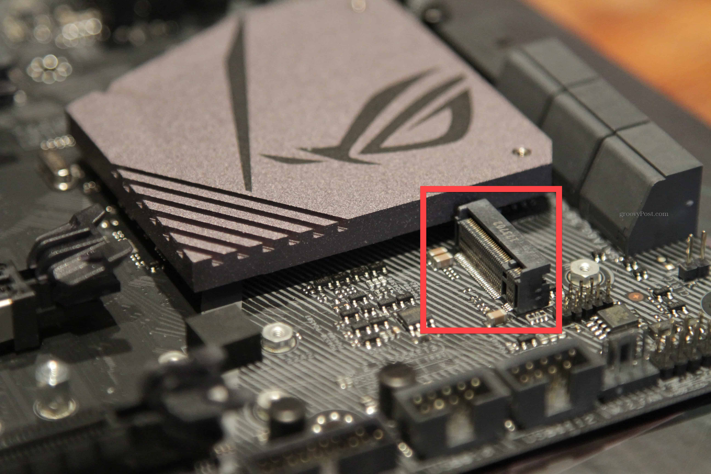
Pierwszy krok to wykręcenie małej śrubki zabezpieczającej przy słupku dystansowym.
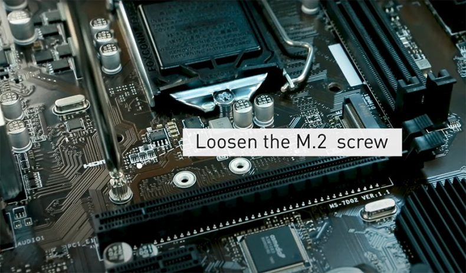
Wsuń dysk M.2 do gniazda pod kątem około 30 stopni. Styki muszą całkowicie schować się w slocie. Dysk będzie lekko odstawał do góry, to normalne.
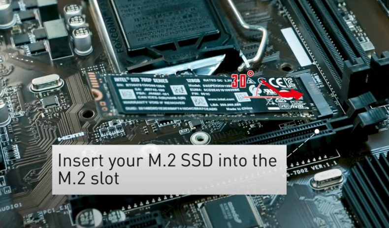
Delikatnie dociśnij dysk do słupka dystansowego i przykręć wykręconą wcześniej śrubkę. Nie dokręcaj na siłę, ma po prostu stabilnie trzymać dysk.
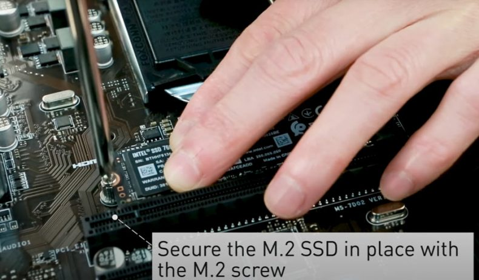
Prawidłowo zamontowany dysk powinien leżeć równolegle do płyty głównej i nie ruszać się w slocie.
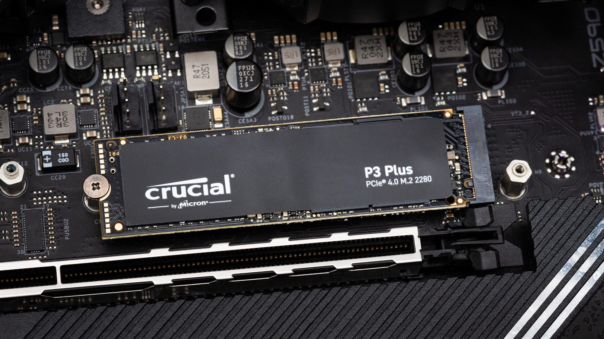
A tu krótki filmik, jak to zrobić poprawnie:
2.2 Dysk HDD
Jeśli dostaniesz starszy dysk 2,5” lub 3,5”, procedura wygląda trochę inaczej, bo potrzebujesz kabli:
- Wsuń dysk do odpowiedniej kieszeni w obudowie komputera i zabezpiecz go śrubami, żeby nie latał.
- Podepnij zasilanie: Podłącz szeroką wtyczkę zasilania SATA (idzie prosto z zasilacza).
- Podepnij dane: Podłącz węższy kabel SATA (SATA data) do dysku, a drugi koniec wepnij do wolnego portu SATA na płycie głównej.
A tu krótki filmik, jak to zrobić poprawnie:
2.3 RJ-45 Kabel
Są trzy rodzaje kabli które musisz zapamiętać: w schemacie A i B i skrosowany. W przypadku skosowanego kabla wystarczy że na jednym końcu będzie A a na drugim B.
Jak zapamiętać kolory?
Zapamietaj sobie że wszystkie kolory zaczynają się białym wariantem oprócz niebieskiego, pózniej zapamiętujesz że różnicą między A i B jest pomarańcz i zielony.
Jak zapamiętasz te zasady to musisz pamiętać tylko że w B kolor początkowy to pomarańcz, w środku jest odwrócony niebieski a na kończu zawsze brązowy.
Na egzaminie raczej będziesz miał gotowy kabel w kat. B, wiec możesz skopiować wszystkie kolory i w razie kat. A jedynie zamienić pomarańcz i zielony.
3 Identyfikacja parametrów systemu Linux
Na egzaminie dostaniesz zadanie, żeby sprawdzić i zapisać w arkuszu parametry stacji roboczej z Linuxem (najczęściej Ubuntu). Egzaminatora nie obchodzi jak to zrobisz, liczy się poprawny wynik. Masz dwie drogi: wyklikać to graficznie albo wykonać szybkie komendy w Terminalu (wymagane w przypadku serwera linux).
3.1 Polecam każdemu nauczyć się podstawowych komend, pokazują one więcej danych niż to co znajdziemy graficznie, i często jest to szybsze i pewniejsze rozwiązanie.
3.2 Wersja jądra i nazwa dystrybucji
Zaczynamy od podstaw, czyli co to w ogóle za system i jakie ma jądro (kernel).
- Otwórz Ustawienia systemu.
- Zjedź na sam dół i kliknij zakładkę System -> Informacje (About).
- Zobaczysz tam pełną nazwę dystrybucji (np. Ubuntu 24.04 LTS).
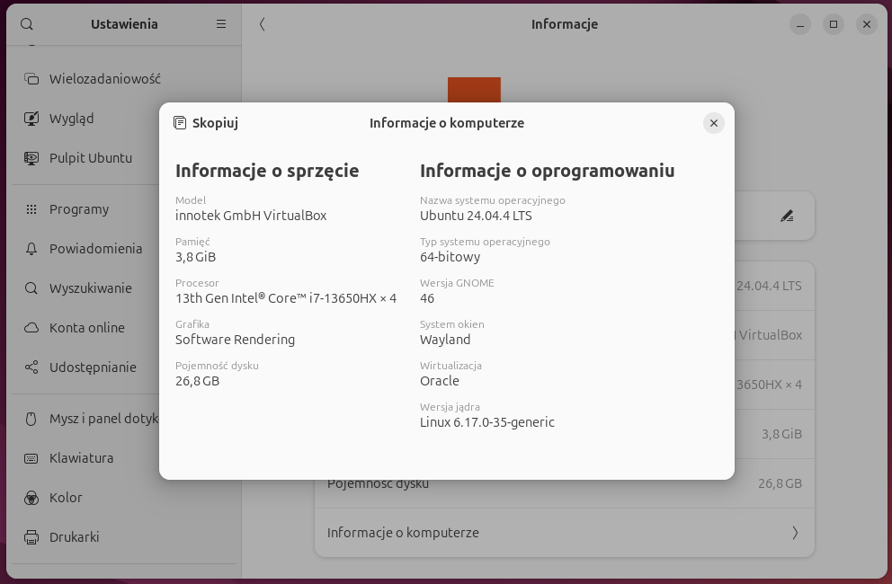
Można tam też zmienić nazwę komputera.
Są na to różne komendy, ja polecam zapamiętać jedną hostnamectl
hostnamectl # Pokazuje wersję jądra i dystrybucji
hostnamectl hostname test # Zmienia nazwę komputera na test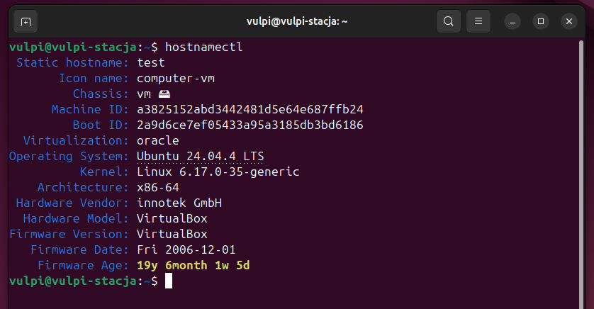
Jak widać ta komenta jest bardzo uniwersalna i kluczowa w niektórych zadaniach. Pokazuje ona m.in. nazwę komputera (hostname), wersję jądra (kernel), i wersję dystrybucji (operating system)
Można też użyć innych komend:
uname -r # Pokazuje wersję jądra (np. 6.8.0-generic)
cat /etc/os-release # Pokazuje pełne info o dystrybucji (ale nie o jądrze)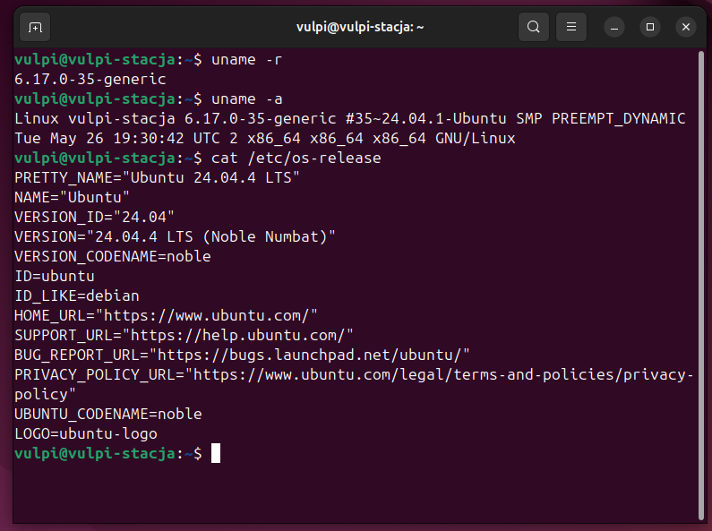
W teorii można odczytać również wersje Ubuntu poprzez komende: uname -a, ale jest to trudniejsze.
Żeby zmienić nazwe stacji: sudo hostnamectl hostname nowa-nazwa Dane można zweryfikować za pomocą: hostnamectl
3.3 Procesor (Nazwa, model, taktowanie)
Musisz wyciągnąć pełną nazwę (np. Intel Core i5…) oraz jego bazowe prędkości.
Graficznie sprawdzisz tylko producenta i model - użyj komendy lscpu
- Wejdź w Ustawienia -> System -> Informacje (About).
- Tam znajdziesz linijkę Procesor gdzie jest podany model i producent
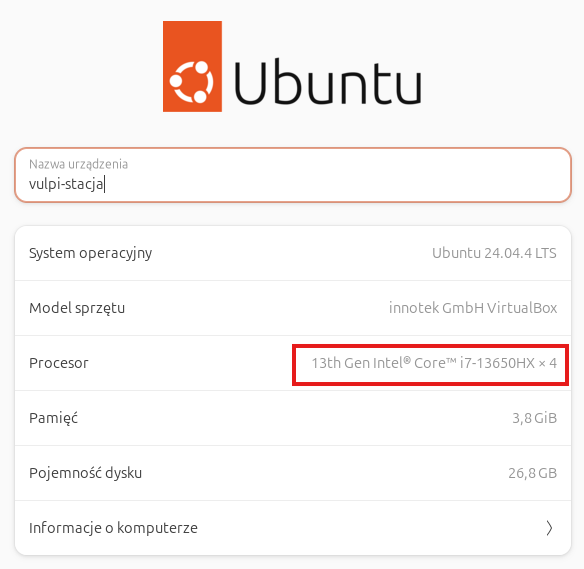
To jest absolutny klasyk, zapamiętaj tę komendę:
lscpuPo wpisaniu szukaj linijek: * Model name: (pełna nazwa procesora)
* CPU max MHz (taktowanie maksymalne)
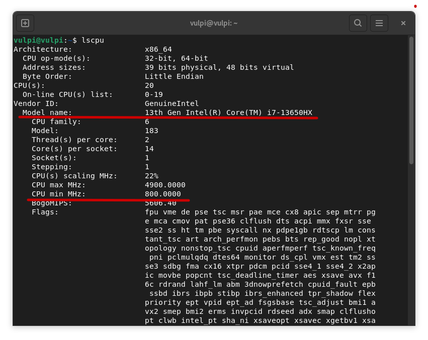
Można również przeczytać obecne taktowanie w pliku /proc/cpuinfo za pomocą cat /proc/cpuinfo
3.4 Pamięć RAM (Ilość i parametry)
Czasem są pytania o to ile masz gigabajtów i jak szybkie są kości.
Graficznie sprawdzisz tylko wielkość RAM - użyj komendy dmidecode --type memory
- Ponownie Ustawienia -> System -> Informacje (About).
- Szukaj linijki Pamięć podana jest tam łączna ilość pamięci RAM (np. 16,0 GiB).
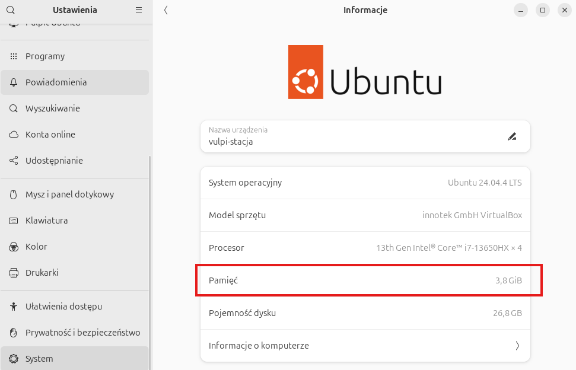
Szybkie sprawdzenie ilości RAM-u w ludzkim formacie (flaga -h pokaże np. 8Gi, 16Gi):
free -h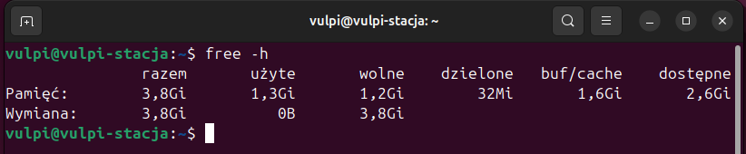
Jeśli potrzebujesz szczegółów technicznych (częstotliwość, typ DDR):
sudo dmidecode --type memory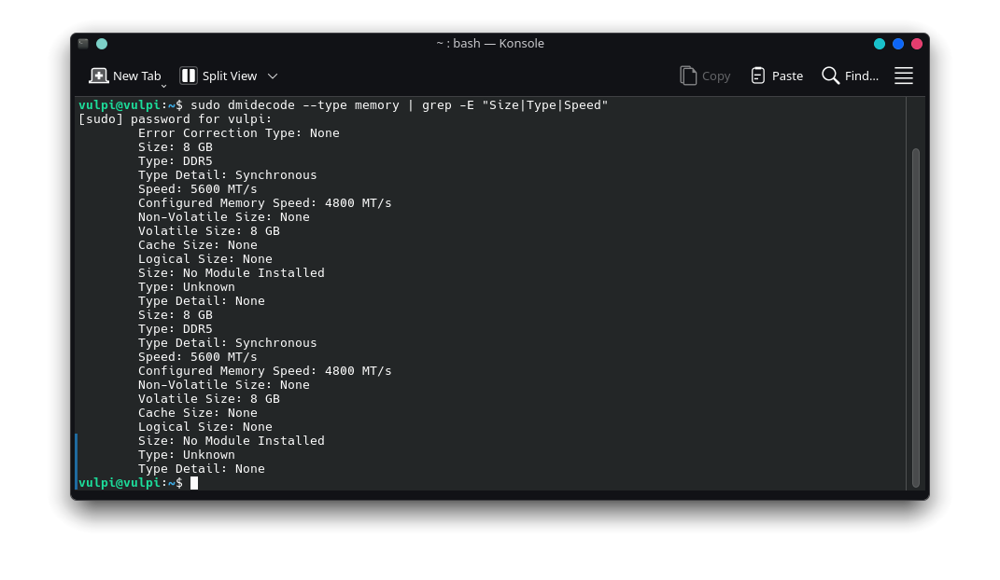
3.5 Karta graficzna i rozdzielczość monitora
Tutaj sprawdzamy model GPU oraz rozdzielczości monitora
Graficznie nie sprawdzisz producenta i modelu - użyj komendy `lspci’
- Rozdzielczość monitora: Wejdź w Ustawienia -> Ekrany (Displays). Kliknij na pole Rozdzielczość (Resolution) - najwyższa wartość na liście to Twoja maksymalna rozdzielczość.
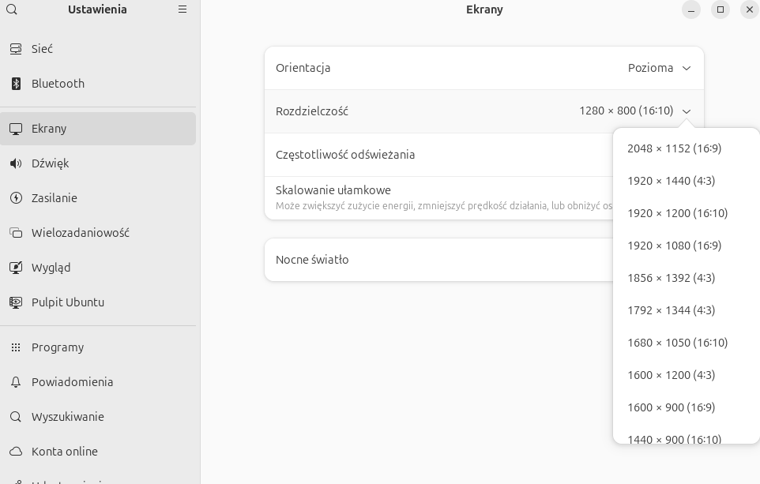
Wyciąganie modelu karty graficznej (szukaj linijki VGA compatible controller):
lspciSprawdzenie dostępnych rozdzielczości monitora (ta z gwiazdką * lub najwyższa na samej górze to twoja max rozdzielczość):
xrandr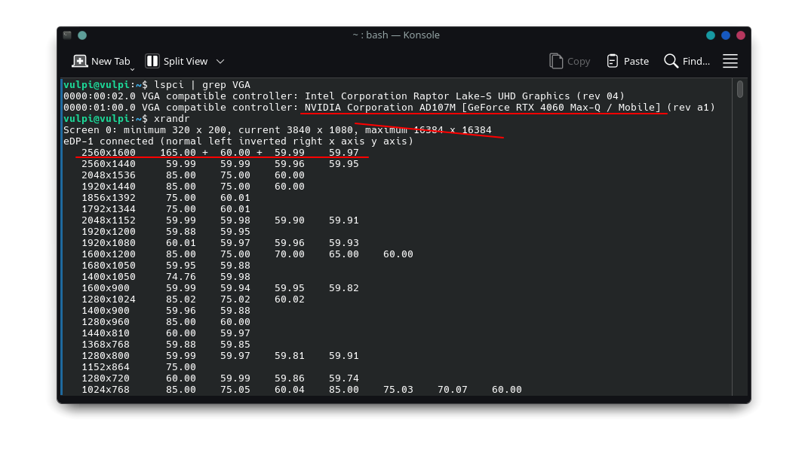
Zignoruj Screen 0, to jest wirtualny ekran od systemu a nie fizyczny monitor.
3.6 Dyski - Rozmiar i wolne miejsce
W poprzednich arkuszach pojawiały się pytania o identyfikacje wolnego miejsca na dysku.
W GUI najlepiej uruchomić aplikacje Dyski. W niej znajdziemi wszystkie dyski które występują na systemie, kliknij na wybrany dysk i przeczytaj dane. Czasem trzeba kliknąć na konkretny wolumin aby przeczytać wolne miejsce tego woluminu.
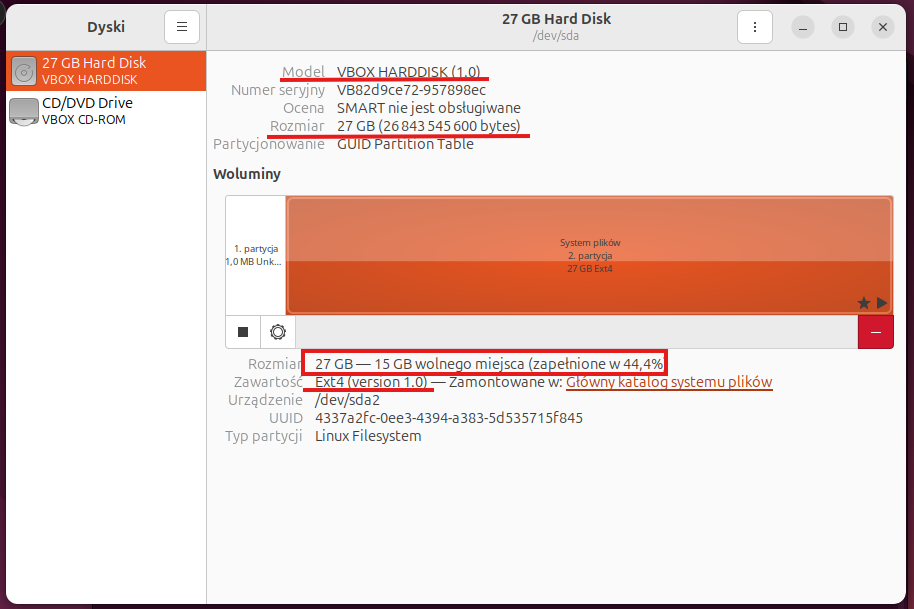
W tej aplikacji można również formatować dysk, usuwać woluminy, zmieniać ustawienia montowania itp.
W konsoli najlepiej sprawdzą się dwie komendy:
df -h # Pokazuje rozmiar i wolne/użyte miejsce
sudo lshw -class disk # Pokazuje producenta, model i punkt montowaniaNiestety lshw nie pokazuje nam wolnego i użytego miejsca a raczej samą wielkość dysku, dlatego musimy użyć df -h do tego celu.
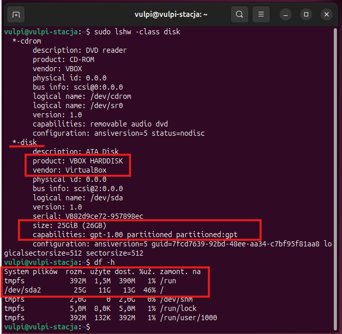
Jak widać na zdjęciu mamy różne dane: producenta, model, rozmiar i nawet możliwości dysku. Jeśli musimy przeczytać dane z df -h dla konkretnego dysku to możemy użyć lshw i dopasować dyski.
W moim przypadku to jest dysk wirtualny, na prawdziwej maszynie producentem może być np. Samsung itp.
3.7 Najważniejsze komendy do identyfikacji
Te komendy załatwiają 90% pytań sprzętowych na Linuxie.
hostnamectl- Sprawdzanie jądra, dystrybucji i zmiana nazwy komputera- Alternatywy:
uname -r- Wersja jądra (np.6.5.0-27-generic)cat /etc/os-release- Dokładna nazwa dystrybucji (szukajPRETTY_NAME)
lshw -class disk- Różne dane o dyskach (bez wolnego/użytego miejsca)lscpu- Wszystko o procesorze (szukajModel nameorazCPU MHz)lspci- Producent i model karty graficznej (szukaj linii zVGA)df -h- Sprawdzanie rozmiaru lub wolnego/użytego miejsca na dyskudmidecode --type memory- Dokładne dane o kościach pamięci RAMxrandr- Rozdzielczości ekranu (szukaj linii z napisemconnected)free -h- Ilość pamięci RAM ogólnie ale również użytej i wolnej
Czasem wykonująć komendy nie pokazują się wszystkie opcje albo komendy w ogóle nie da się uruchomić. Dodaj wtedy sudo przed komendą np. sudo lscpu i wpisz hasło. Teraz wykonując za pomocą sudo nie trzeba już podawać hasła.
4 Identyfikacja parametrów systemu Windows
W przypadku Windowsa sprawa jest prosta, ponieważ zawsze jest graficzny a narzędzia do tego podają dokładne dane. Wiec i na serwerze i na stacji windows można łatwo te parametry zidentyfikować.
Tak naprawde warto zapamiętać pare programów:
- Menadżer zadań - Informacje o systemie - Dxdiag - Ustawienia
Trzeba troche poszukać, jedyne co warto też zapamiętać to Dxdiag, bo pokaże on wersje DirectX o którą czasem pytają. Inne programy są raczej nam zname.
5 Konfiguracja routera
W prawie każdym arkuszu egzaminacyjnym pojawiło się jakieś zadanie o routerze, od prostego ustawienia IP i maski interfejsu LAN po VLANy, serwery DHCP i inne. Omówimy to tutaj.
Będę korzystał z routera MikroTik w wersji 6.49.10 (long-term). Obraz .iso tego routera można też pobrać na stronie mikrotika.
5.1 Ustawienie IP interfejsu LAN
To można ustawić odrazu w zakładce Quick Set, jest to pierwsza strona po zalogowaniu na stronie Routera.
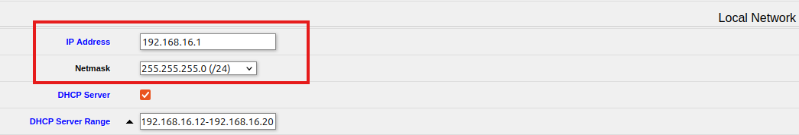
5.2 Ustawienia serwera DHCP
Także w zakładce Quick Set możemy ustawić podstawowe opcje DHCP.
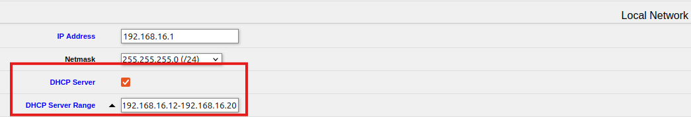
Do bardziej skomplikowanych opcji takich jak dzierżawy i rezerwacja IP musimy przejść do zakładki WebFig -> IP -> DHCP Server
Często będziesz polegał na IP z DHCP przy badaniu połączeń, lub przy zwykłych połączeniach z serwerem. Dlatego zawsze pamietaj o tym aby po zmianie czegoś w DHCP odswieżyć swoją karte aby ta wzieła najnowszy adres IP.
W windowsie zrobisz to za pomocą komendy:
ipconfig /renew
W linuxie zrobisz z komendą sudo netplan apply
5.2.1 Ustawienia opcji dzierżawy i rezerwacje
Wymagany WebFig
5.2.1.1 Czas dzierżawy
W zakładce DHCP Server -> DHCP powinieneś znaleźć przynajmniej jeden rekord z konfiguracją DHCP, kliknij na niego.
Czas dzierżawy ustawimy wpisując poprawną wartość w okienku Lease Time, domyślą wartością jest 10 minut. Co oznacza że urządzenie będzie odpytywać router o adres IP co 10 minut, a jeśli nie odpyta to adres wróci to puli.
Format w okienku to hh:mm:ss, gdzie:
- hh to godziny,
- mm to minuty,
- ss to sekundy
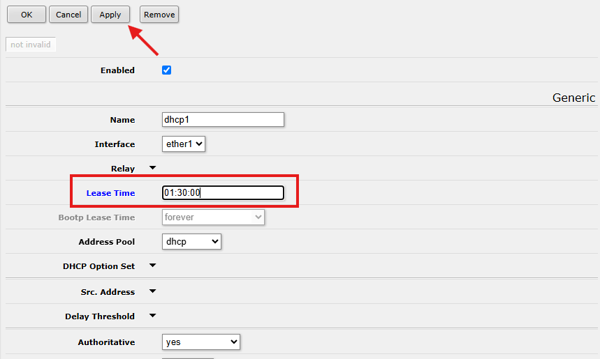
Po konfiguracji nie zapomnij kliknąć Apply, w przeciwnym wypadku konfiguracja sie nie zapisze i będzie błąd w konfiguracji.
5.2.1.2 Rezerwacje adresów IP
Aby zarezerwować adres IP w DHCP musimy przejść do zakładki Leases. Najłatwiej jest podłączyć tylko komputer dla którego chcemy zarezerować adres IP do routera, powinieneś ustawić podany IP dla interfejsu tego komputera i dopiero wtedy połączyć się z Routerem. Zrobienie tego w taki sposób zagwarantuje że zakładka Leases będzie miała tylko jeden rekord - podłączonego komputera.
Kliknij w rekord lub stwórz nowy, w przypadku stworzenia nowego wpisz adres MAC (adres fizyczny) i adres IP jaki chcesz.
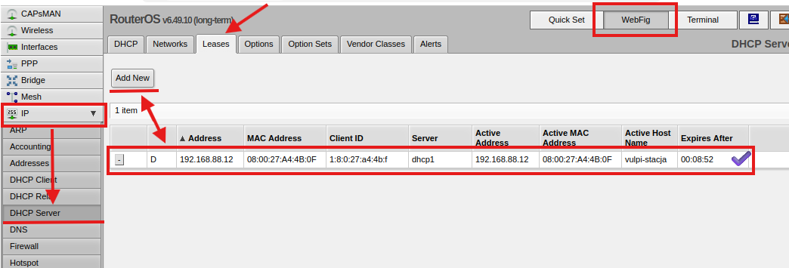
Czasem musimy stworzyć rekord bez połączenia urządzenia. Zrobimy to po kliknięciu w przycisk Add New i wpisaniu adresu MAC (adres fizyczny) i żądanego adresu IP.
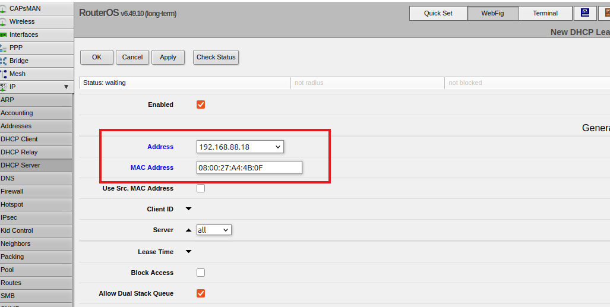
W windowsie MAC (adres fizyczny) znajdziecie wchodząc na szczegóły karty sieciowej:
- Wejdz na panel sterowania
- Wejdz w Centrum sieci i udostępniania
- Na lewym pasku
Zmień ustawnienia karty sieciowej - Kliknij dwa razy na podaną karte i kliknij
Szczegóły...
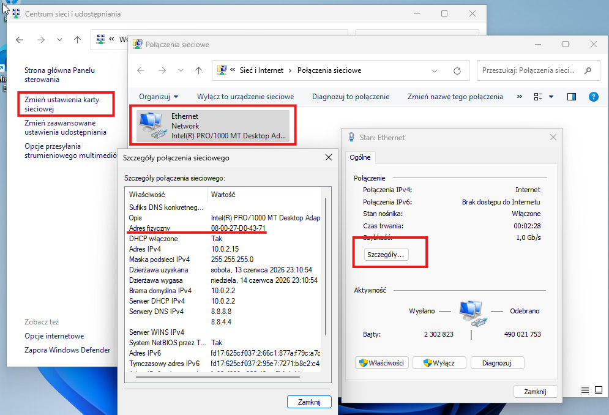
W linuxie MAC (adres fizyczny) znajdziecie wpisując ip a
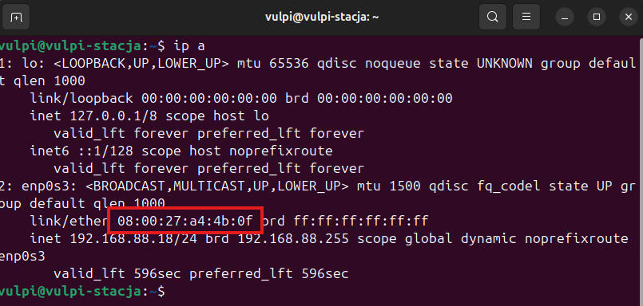
Po kliknięciu w rekord, możesz upewnić się że MAC adress jest poprawny i kliknąć przycisk Make Static. To spowoduje rezerwacje podanego tam adresu IP.
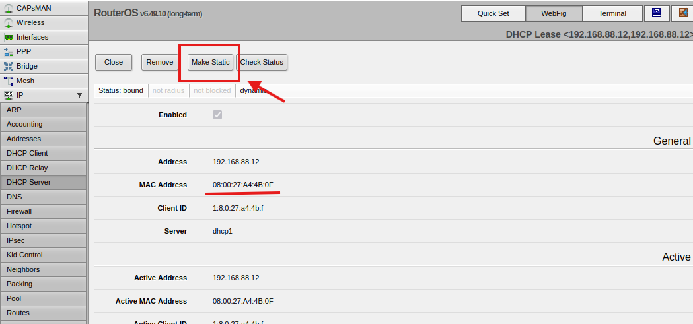
Jednak my chcemy również zmienić adres IP rezerwacji na inny, niestety musimy wyjść z rekordu i wejść ponownie aby MikroTik poprawnie załadował możliwośc edycji.
Po tym możemy łatwo wpisać adres IP który chcemy żeby był zarezerwowany dla tego urządzenia.
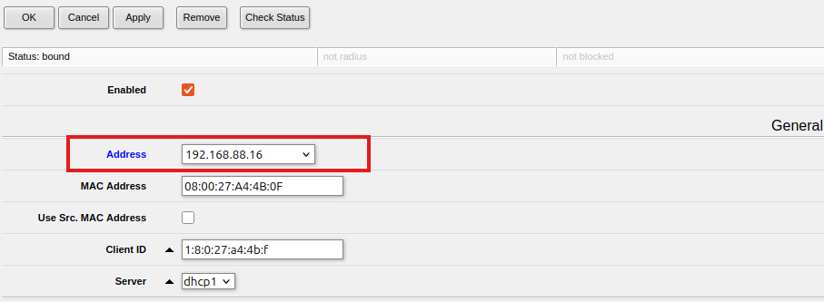
Czasem pomylimy komputery i trzeba usunąć rekord, jest to proste, wystarczy kliknąć znak minusa - przy rekordzie.
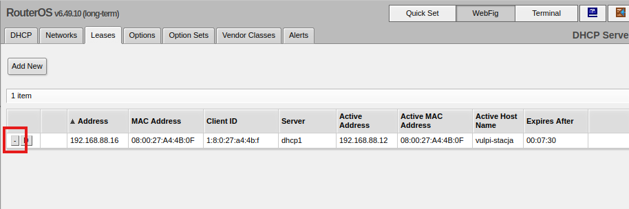
Aby rekord pojawił się znowu tam możemy w systemie zarządać nowego IP, najlepiej po prostu wyłączyć i właczyć kartę.
Najlepiej żeby konfigurować router będąc podłączonym tylko z jednym urządzeniem, tym który też konfiguracja obchodzi.
Jednak jakbyś był leniwy warto sprawdzić czy w twojej wersji routera nie ma zakładki Active Host Name. Za pomocą podanej tam wartości można łatwo zidentyfikować połączenie.
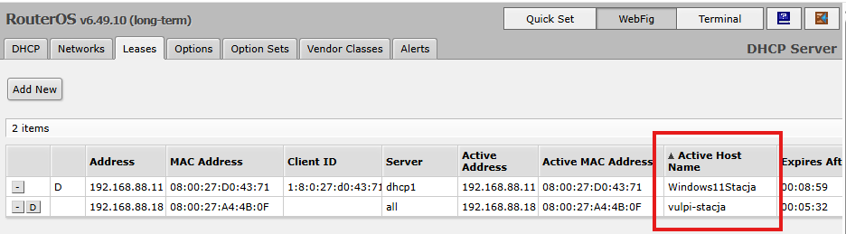
Żeby zidentyfikować czy rekord w Leases jest dynamiczny czy statyczny w MikroTiku wystarczy spojrzeć na litere w drugiej kolumnie. Jeśli jest tam litera D to rekord jest dynamiczny. Czyli IP zostało przypisane dynamicznie, jeśli jednak nie ma tam żadnej litery to oznacza to, że jest to statyczna rezerwacja adresu IP.
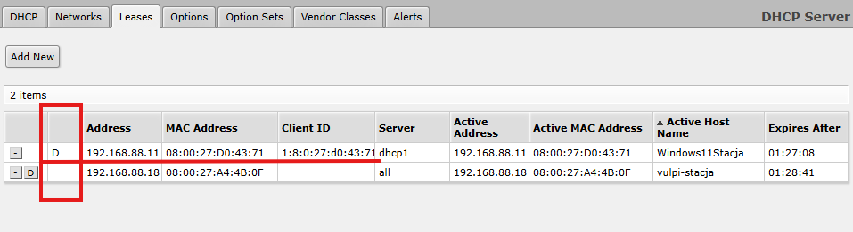
Widzimy na obrazku że przy rekordzie z adresem IP 192.168.88.11 jest litera D, to oznacza że adres ten został przypisany dynamicznie, w przypadku rekordu z adresem IP 192.168.88.18, jest to adres przypisany z statycznej rezerwacji, którą dokonaliśmy w kroku 2, przy ręcznym tworzeniu rekordów.
5.2.2 Ustawienie puli adresów w WebFig
Pule adresów DHCP najłatwiej ustawić w zakładce Quick Set, ale da się również zrobić to w zakładce WebFig
Musisz wejść w WebFig -> Ip -> Pool, a tam kliknąć na rekord puli która jest przypisana do serwera DHCP (domyślnie pula ta nazywa się dhcp).
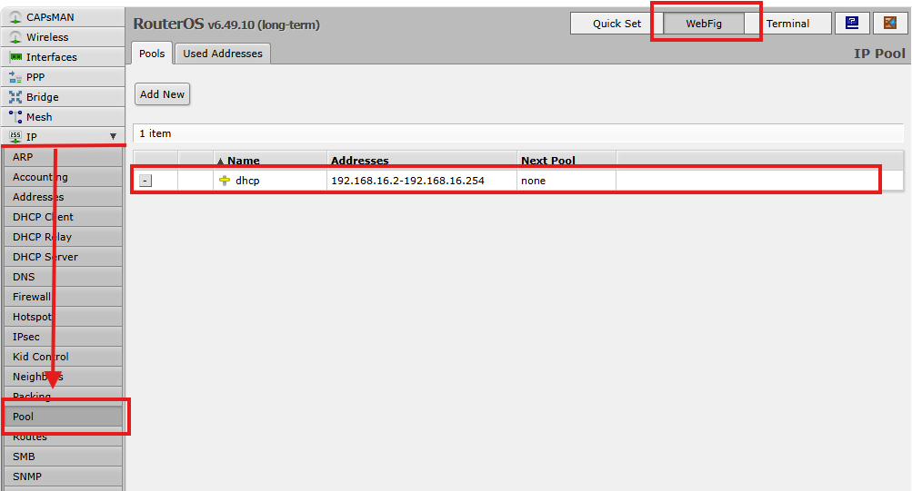
Po kliknięciu przejdziemy do strony konfiguracyjnej, na której trzeba zmienić wartość w polu Addresses. Wartość ta jest w formacie: IPv4(start)-Ipv4(koniec), gdzie IPv4 jest podawane w 4 oktetach: np. 192.168.88.2
Przykład: 192.168.88.50-192.168.88.120,
To oznacza że serwer DHCP będzie przydzielał adresy tylko w przedziale od 192.168.88.50 do przedziału 192.168.88.120.
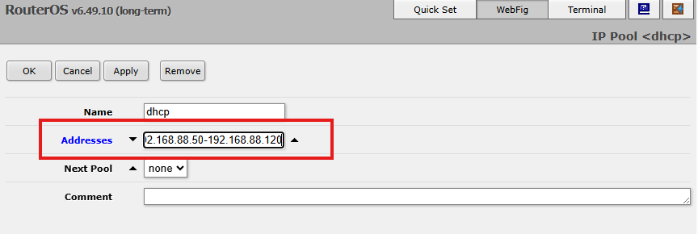
6 Konfiguracja switcha
Często trzeba skonfigurować podstawy w switchu, dość często zdarza się również VLAN. Do tego użyje emulatora TP-Link TL-SG2216 na ich stronce, spróbuje jednak wyjaśnić to w uniwersalny sposób. Niestety przełączniki rzadko mają symulatory więc nie bedziemy w stanie zasymulować go w VMie.
6.1 Ustawienie podstaw przełącznika
Żeby ustawić IP, maske i brame domyślną switcha musimy znaleźć jakieś systemowe opcje. Często znajduje się to w zakładce system. W przypadku tego modelu znajduje się to w System -> System info -> System IP, ale to zależy od modelu i producenta.
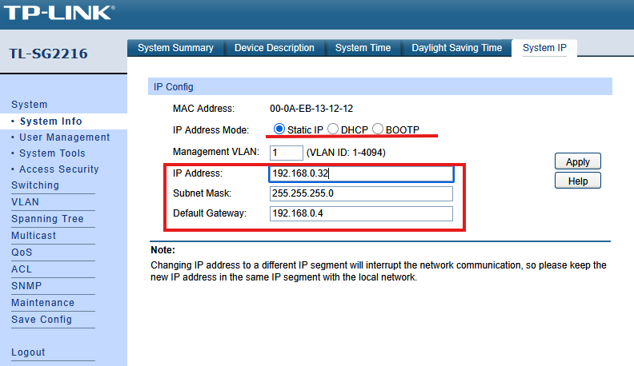
Jak widać na obrazku jesteśmy w stanie wybrać również opcje DHCP i BOOTP, tą ostatnią możemy pominąć bo raczej nie występuje na egzaminie. Zazwyczaj będzie static IP, ale może być sytuacja z DHCP.
Z DHCP, możemy zostać poproszeni o rezerwację jakiegoś IP dla MAC adresu switcha z routera który ma ten serwer DHCP.
6.2 Ustawienia VLAN
Bardzo często trzeba stworzyć jakieś nowe VLANy i ustawić tryb tagowania. Switche maja własny standard VLAN: 802.1Q, nie trzeba tego kodu zapamiętywać.
Warto wiedzieć czym jest tagowanie i co one robi, są różne tagowania w tym, untagged, tagged i not member:
- Untagged ustawia się przed urządzeniami które nie obsługują VLANów np. zwykłe PC, drukarki itp. Oznacza to tyle że switch nie przekaże dalej specyficzne dla VLAN.
- Tagged ustawia się przed innymi switchami, np. jak jest jakiś LAG. Na egzaminie raczej tego nie ma bo zazwyczaj jest wykorzystywany tylko jeden switch. Ale może być w zadaniu żeby dać port tagged, to daj żeby był tagged.
- NotMember po prostu oznacza że port nie jest częścią wybranego VLANu.
Zazwyczaj są zadania żeby stworzyć pare VLANów i przypisać jakieś porty do jakiegoś VLANa.
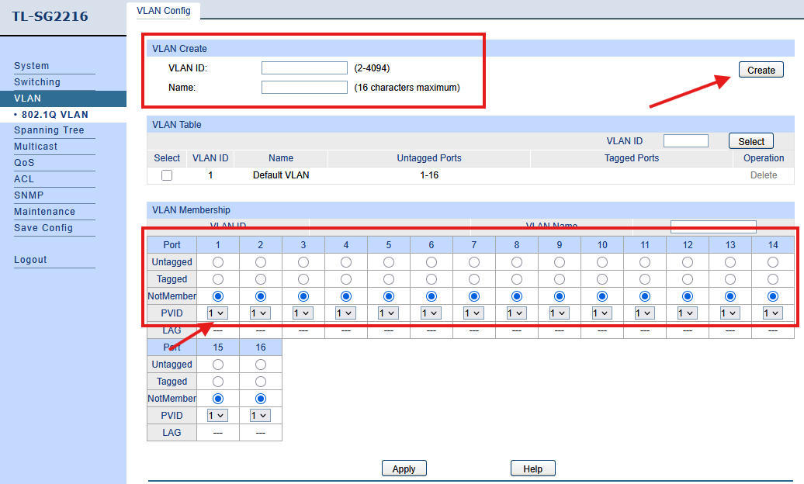
Niestety nie jestem w stanie stworzyć nowych VLANów ponieważ jest to emulator a nie prawdziwy switch. Jednak robi się to prosto. Podajemy ID vlanu tak jak jest napisane w zadaniu, i nazwe vlanu, jak nie jest podane możemy wybrać jaką chcemy. np. VLAN(NUMER ID).
Pózniej mamy VLAN Membership które pozwala na przydzielenie portom VLAN, czasami w niektórych modelach switcha te kreatory i zarządanie są w osobnych zakładkach.
PVID to jest selektor ID naszego VLANu kliknij i wybierz podany w zadaniu VLAN, Tagowanie wybierzemy za pomocą przycisku pod ID portu, jeśli port nie ma podanego VLANu to zostaw 1.
6.3 Ustawienia portów - Wyłączanie/Włączanie
Zazwyczaj wyłączanie i właczanie portów robi się poprzez jakąś zakładke Port/Ports, zaznaczenie tam podanych portów i wybranie statusu “disabled” aby wyłączyć lub “enabled” aby właczyć. Zazwyczaj trzeba również kliknąć Apply
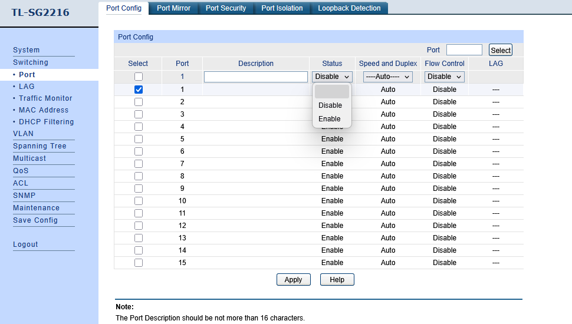
Trzeba uważać żeby nie zaznaczyć Port config jakieś innej zakładki, gdzie porty dotyczą tej zakładki a nie ogólnej konfiguracji portów w switchu. Jeśli istnieją zakładki to wybierz taką która jest najbardziej ogólna. Np. w przypadku tego switcha jest to Switching o wiele bardziej ogólniejsza nazwa niż np. Spanning tree
7 Różne z Windowsa
W windowsie na stacji i na serwerze często są podobno rzeczy które trudno sklasyfikować. Zazwyczaj będzie konfiguracja karty sieciowej, tworzenie kont i grup. Czasem znajdą się też przydziały dyskowe lub konfiguracja dysków.
Najlepszym jednym narzędziem do tego jest Zarządzanie komputerem:
Dodamy tam użytkowników i grupy, można tam też zarządzać dyskami.
Warto też zapamiętać gpedit.msc, po uruchomieniu którego będziemy mogli edytować zasady użytkowników i komputera, czyli np. długość haseł, blokowanie panelu sterowania itp.
7.1 Ustawienia karty sieciowej
Ustawianie kart sieciowych w windowsie znajduje się chyba w każdym arkuszu. Najlepiej wejść w Panel sterowania -> Centrum sieci ... i kliknąć Zmień ustawienia karty sieciowej gdzie możemy edytować karty które nas obchodzą.
Często tutaj będziemy musieli ustawić nazwe interfejsu, lub przypisanie IP, maski, lub bramy domyślnej. Czasem trzeba też ustawić IP serwera DNS, zazwyczaj jest to 8.8.8.8 ale czasem trzeba ustawić tam IP od serwera linux albo windows, lub w przypadku ustawiania w serwerze trzeba wpisać adres loopback czyli 127.0.0.1 który wskazuje na własną maszyne.
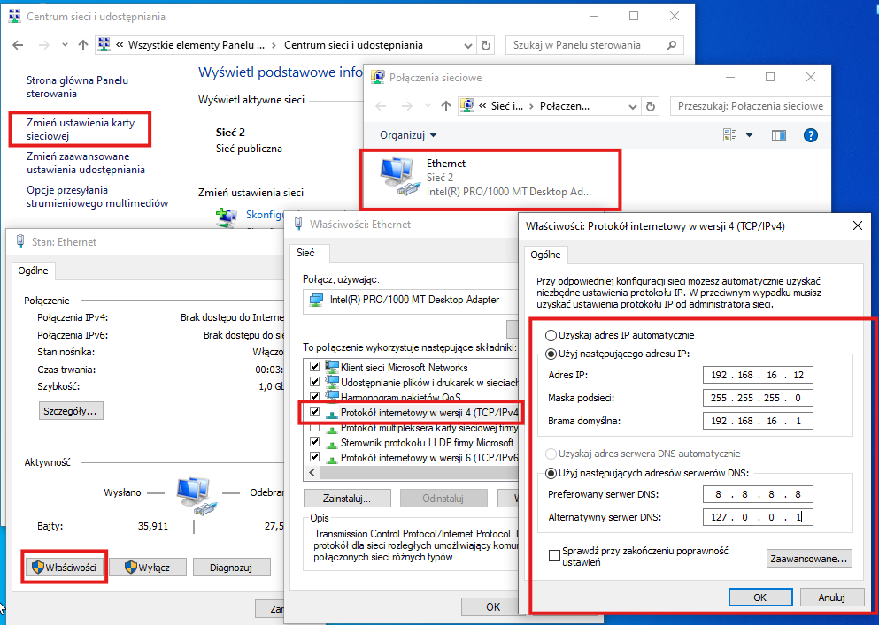
W jednym z okien można też łatwo zmienić nazwę karty albo wyłączyć ją.
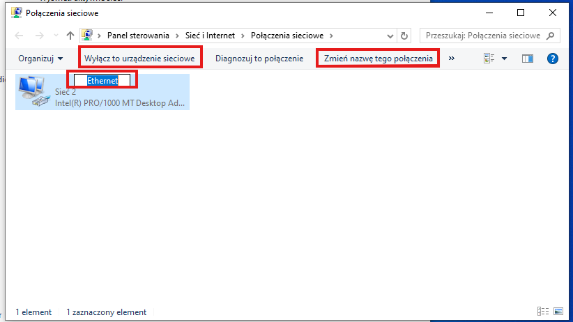
7.2 Tworzenie lokalnych grup i użytkowników
Te zadanie często się pojawia, wystarczy wejść w Zarządzanie komputerem i tam przejść do zakładki Użytkownicy i grupy lokalne -> Użytkownicy lub Grupy gdzie klikająć prawym jesteśmy w stanie stworzyć nowego użytkownika lub grupe. Klikając na użytkownika jesteśmy w stanie dodać go do grupy, lub zmienić jakieś ustawienia.
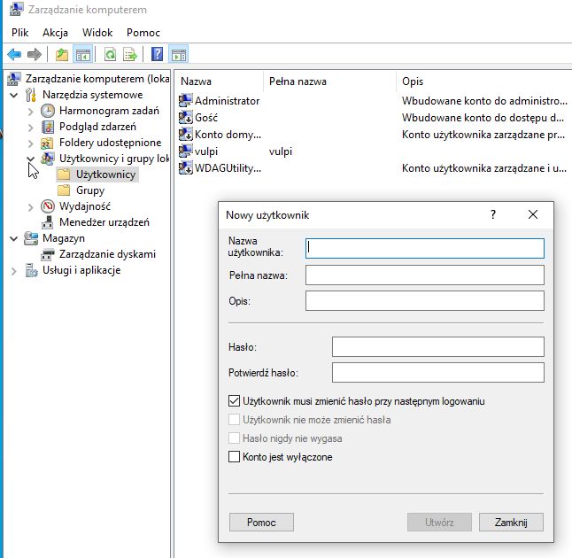
Warto wiedzieć że to tworzy lokalnego użytkownika lub grupe, czyli użytkowników na komputerze w którym to tworzymy. Nie tworzy to jednak domeny (Active Directory) jaka może być w windows server.
7.3 Zasady lokalnych grup w gpedit.msc
W tą aplikacje można wejść po wpisaniu gpedit.msc (pamiętaj o .msc!). Tutaj skonfigurujemy różne opcje komputera lub użytkownika. Można zabronić dostępu do panelu sterowania, lub wymagać długości hasła itp.
Nie da się zapamiętać wszystkich tutaj ustawień wiec najlepiej zapamiętać tylko tgo najczęstsze.
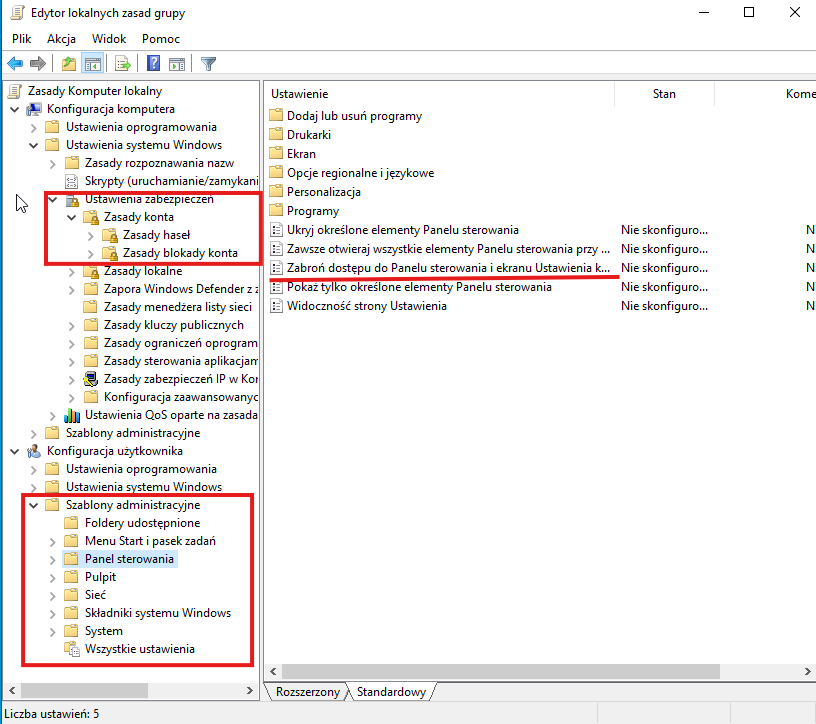
7.4 Uprawnienia dla folderów w systemie NTFS
Często albo udostępniamy plik albo lokalnie chcemy aby inny użytkownik z komputera mógł mieć specyficzne uprawnienia. Możemy to zrobić klikając prawym przyciskiem na folder lub dysk i wchodząc do Właściwości. Tam wybieramy zakładke Zabezpieczenia i możemy edytować.
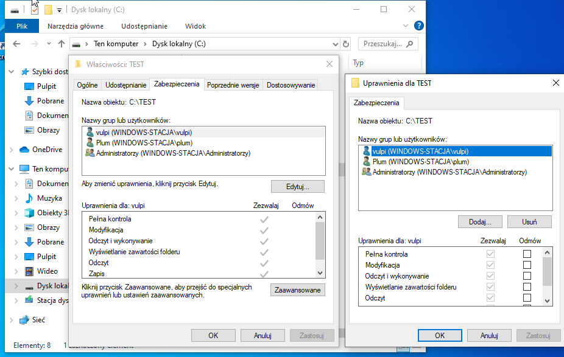
Są jeszcze uprawnienia sieciowe jeśli folder jest udostępniany w sieci. Ustawianie uprawnień wygląda bardzo podobnie, z mniejszą ilością uprawnień do wyboru Sekcja 7.7.4
Trzeba pamiętać że system wybierze najbardziej restrykcyjne uprawnienia pomiędzy sieciowymi a NTFS w przypadku łączenia się z folderem w sieci.
7.5 Konfiguracja dysków
Czasem trzeba sformatować jakiś dysk, lub przypisać jakąś litere lub etykiete woluminowi. Możemy to również zrobić w Zarządzanie komputerem -> Zarządzanie dyskami.
Tutaj możemy zmienić litere woluminu, sformatować dysk, stworzyć nowe woluminy itp.
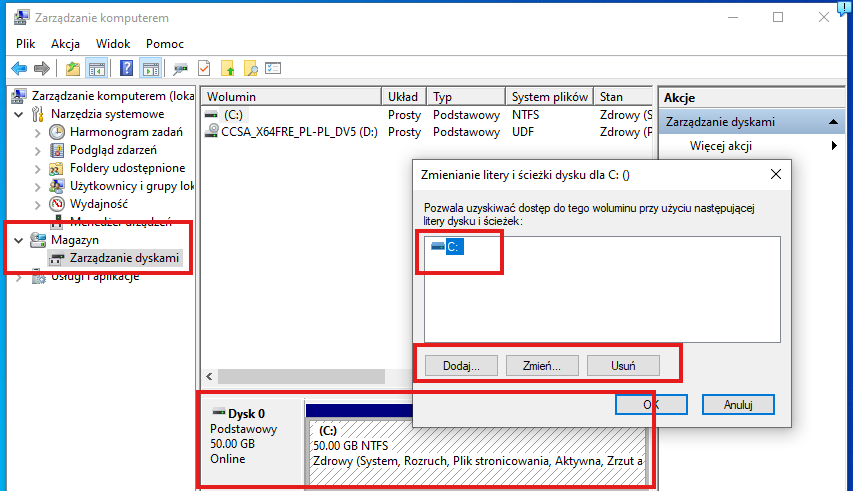
7.6 Przydziały dyskowe
Przydziały można skonfigurować klikając prawym na dysk w ekploratorze plików i poprzez wejście w Właściwości i zakładke Przydział.
Tam włączymy zarządzanie przydziałami i jesteśmy w stanie ustawić domyślny limit. Możemy też stworzyć nowe wpisy przydziałow, dzięki czemu możemy wpisać podany w zadaniu limit.
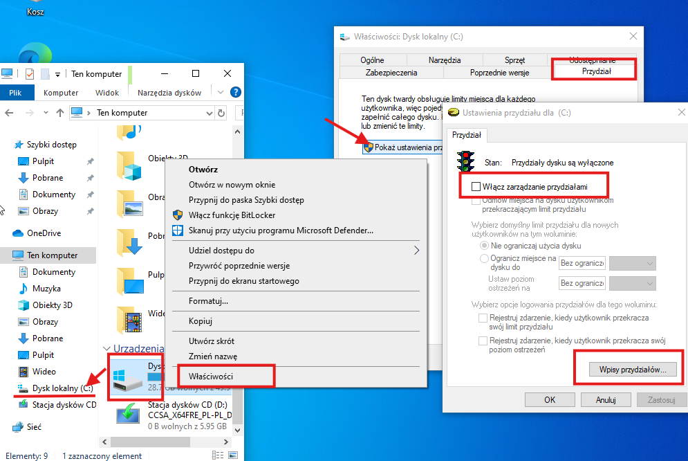
7.7 Udostępnianie folderów lub dysku w sieci
Czasem są zadania w których musisz udostępnić dysk lub folder w sieci. Robisz to wchodząc w właściwości dysku lub folderu i przechodząc do zakładki Udostępnianie.
Tam klikasz Udostępnianie zaawansowane... i udostępniasz.
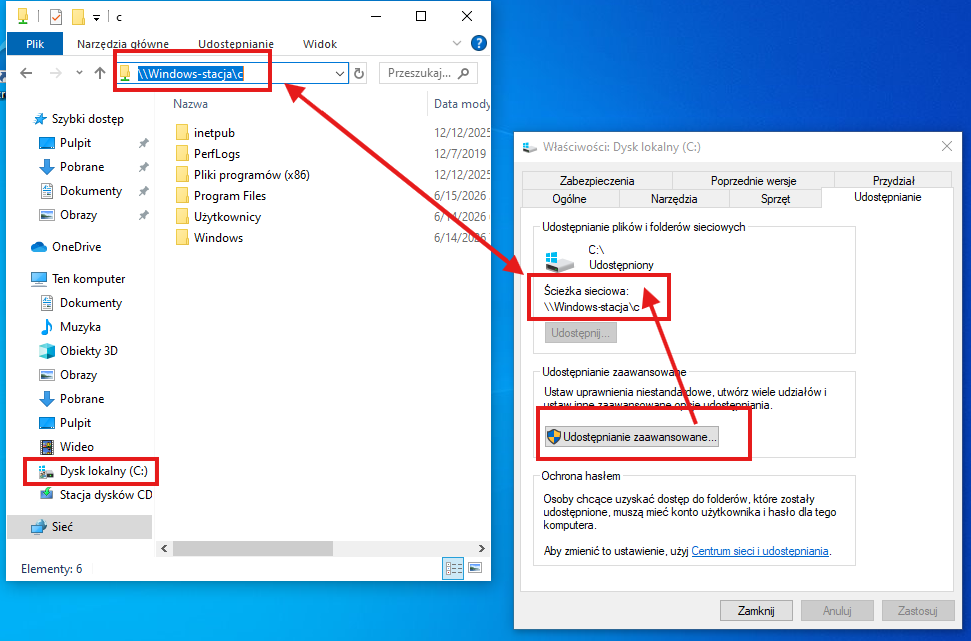
Na dysk wejdziesz poprzez scieżke sieciową podaną w tamtej zakładce.
7.7.1 Folder macierzysty (folder domowy)
Teraz rzadkość ale łatwo to ustawić, więc warto zapamiętać. Wchodząć na użytkownika w Zarządzaj komputerem można wejść w jego ustawienia i ustawić mu folder macierzysty ze scieżką na udostepniony folder.
To spowoduje że ten użytkownik będzie miał ten udostępniany w sieci folder odrazu w eksploratorze plików, jednak jest do folder domowy i przez to system może zmienić jakieś ustawienia przez co inni użytkownicy nie będą mogli w niego wejść chyba że są administratorami.
Zazwyczaj jeśli chodzi o mapowanie to chodzi o domene active directory albo ręczne zmapowanie które omówiłem dalej.
7.7.2 Ręczne mapowanie dysku/folder
Aby ręcznie zmapować dysk/folder w Windowsie trzeba kliknąć prawym na Ten komputer i wybrać Mapuj dysk sieciowy. W kreatorze podajemy wybraną litere dysku i lokalizacje sieciową dysku/folderu.
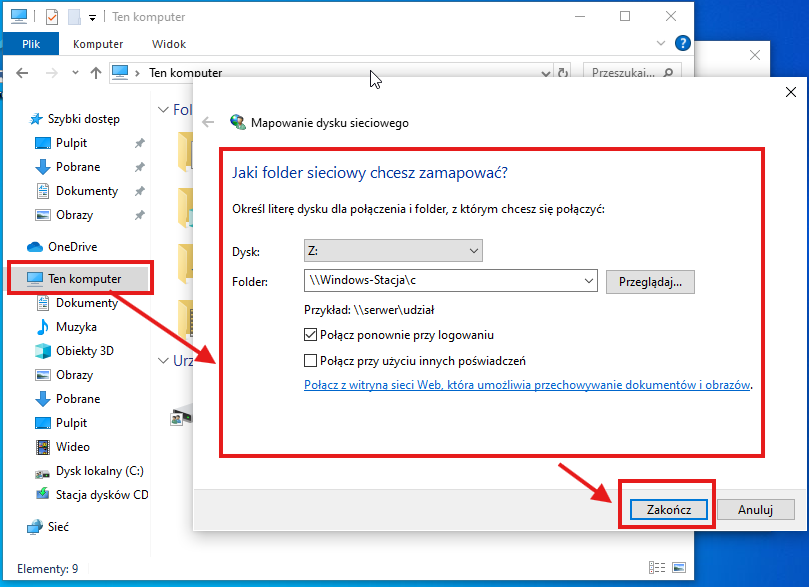
7.7.3 Mapowanie dysku za pomocą zasad grupy
Aby zmapować dysk za pomocą zasad grupy potrzebujemy serwer windows i domene Active Directory. Instalacja tej usługi jest w sekcji Usługi serwera Windows
Jak to zrobić znajdziesz w Sekcja 9.2.4
7.7.4 Uprawnienia dla udostępnianego folderu
Zazwyczaj trzeba również skonfigurować uprawnienia dla podanego folderu. Musimy ustawić uprawnienia zarówno w zakładce Zabezpieczenia jak i również w uprawnieniach sieciowych, aby to zrobić trzeba wejść w zakładke Udostępnianie a pózniej kliknąć w Udostępnianie zaawansowane gdzie możemy dalej kliknąć Uprawnienia.
W finalnym oknie możemy dodawać, usuwać i ustawiać uprawnienia grup i użytkowników.
System wybierze bardziej restrykcyjne uprawnienia między Zabezpieczenia (uprawnienia systemu NTFS) a uprawnieniami sieciowymi ustawionymi w udostępnianiu (uprawnienia udziału).
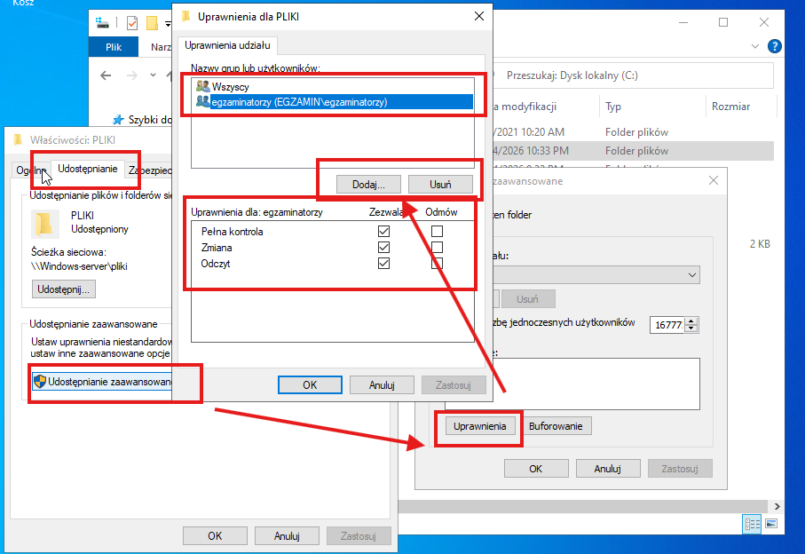
7.8 Konfiguracja drukarki lokalnie
7.8.1 Dodawanie drukarki
Zazwyczaj jest jakiś program który automatycznie tworzy drukarke i instaluje sterowniki. Jednak da się to również zrobić, wejdz na Panel Sterowania -> Urządzenia i drukarki i kliknij Dodaj drukarkę. System będzie chciał automatycznie znaleźć drukarke, jeśli jest tam to wybierz ją w innym wypadku wybierz Drukarki której szukam nie ma na liście i zależnie od drukarki wybierz dodanie przez IP, nazwy, udostępnioną, lub ręcznie dodaj lokalną/udostępnioną drukarke.
Przejdz przez konfigurator drukarki wybierając właściwe opcje i drukarka się doda.
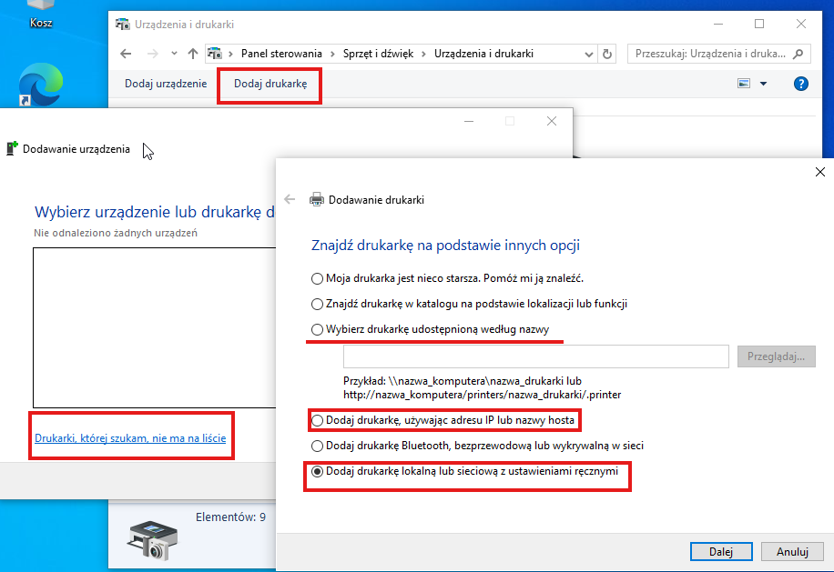
7.8.2 Udostępnianie drukarki
Często trzeba udostępnić drukarkę w sieci można to zrobić w Panel sterowania -> Urządzenia i drukarki, w tym oknie klikasz prawym na drukarke i zaznaczasz Właściwości Drukarki wchodzisz na zakładke Udostępnianie
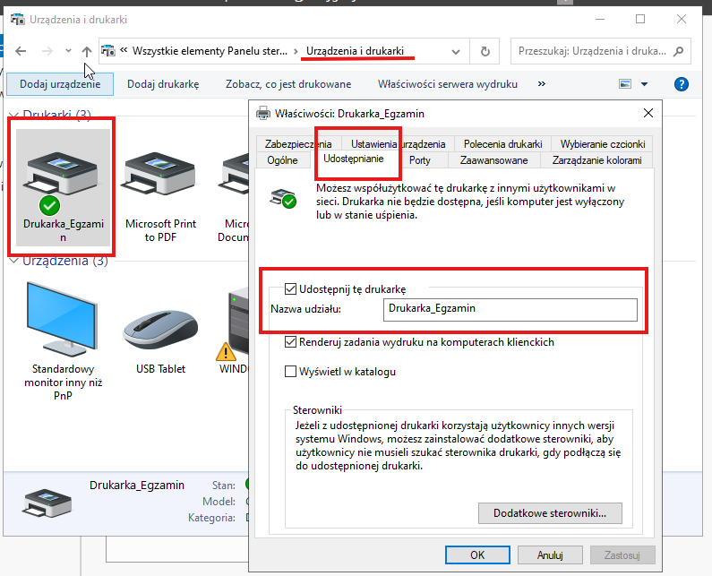
7.8.3 Harmonogram i piorytet drukarki
Aby ustawić harmonogram i piorytet drukarki wejdz w Panel sterowania -> Urządzenia i drukarki, kliknij prawym na drukarke i Właściwości drukarki. Po czym w zakładce Zaawansowane ustawisz harmonogram i piorytet. Harmonogram jest w formacie AM i PM a nie w zegarze typu 24 godziny. Zapamiętaj że 12AM to jest 00:00 i od 1 to 11AM godziny są 1:00 do 11:00, po czym idzie PM, gdzie 12PM to 12:00, a 1PM to 13, 2PM to 14 itd…
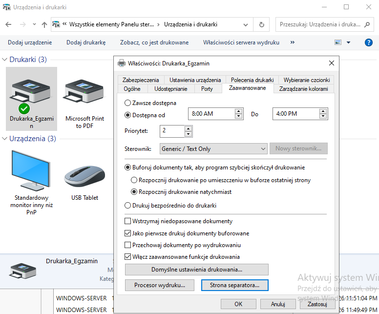
Na zdjęciu widać piorytet drukarki ustawiony na 2, i harmonogram od 8AM do 4PM, co oznacza godziny dostępności od 8:00 do 16:00. Czym większy jest piorytet tym ważniejsza jest ta drukarka.
7.8.4 Uprawnienia drukarki
Aby ustawić uprawnienia wchodzimy w właściwości drukarki tak jak w poprzednich sekcjach. Wchodzimy w zakładke Zabezpieczenia i tutaj już konfiguracja jest podobna do uprawnień NTFS tylko z innymi uprawnieniami.
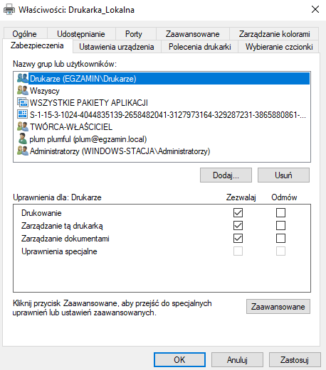
Uprawnienia pozwalają nam na pewny trik który umożliwia piorytety między grupami i użytkownikami. Co zobaczysz w Sekcja 7.8.5
7.8.5 Ustawianie piorytetów drukarki dla grup/użytkowników
Czasem zdarzają się pytania o to żeby ustawić większy piorytet dla np. grupy Dyrektorzy niż dla domyślnej grupy Drukarze.
Niestety robi się to poprzez zduplikowanie drukarki i nazwanie jej w inny sposób oraz przypisanie praw tylko dla tej grupy jaką chcemy.
To co musimy zrobić to stworzyć jeszcze jedną drukarke, często da się to zrobić przez uruchomienie ponownie kreatora drukarki. Przy stworzeniu jeszcze raz drukarki nazywamy ją unikalnie ale odpowiednio z zadaniem i przypisujemy prawa tak aby tylko grupy wypisane mogły z niej korzystać. Ustawiamy piorytet, czym większy jest piorytet tym ważniejszy jest druk z tej drukarki.
Lokalnie drukarka będzie widoczna dla każdego ale może z niej korzystać tylko przypisana grupa.
W active directory trzeba udostępnić drukarkę i rozmieścić ją w domenie dla grup/użytkowników.
7.9 Łączenie się z SSH za pomocą PuTTY
Łączenie sie z SSH za pomocą PuTTY jest mega łatwe. Uruchamiamy PuTTY i w pierwszym oknie odrazu wpisujemy IP serwera i port na którym mamy SSH (domyślnie 22), po czym poniżej wybieramy SSH (connection type). Klikamy Open i logujemy się na jakiegoś użytkownika. Bam jesteśmy na serwerze.
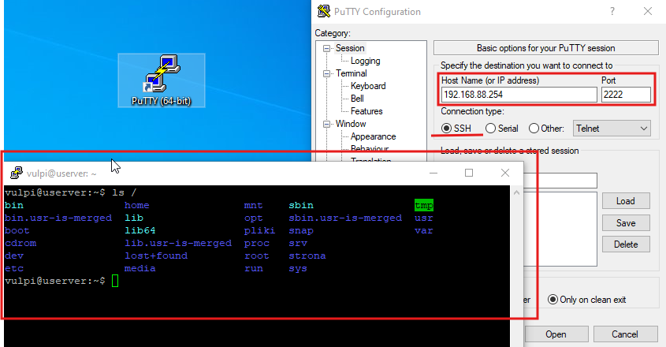
Można też się połączyć za pomocą konsoli przy użyciu ssh nazwa@ip -p port
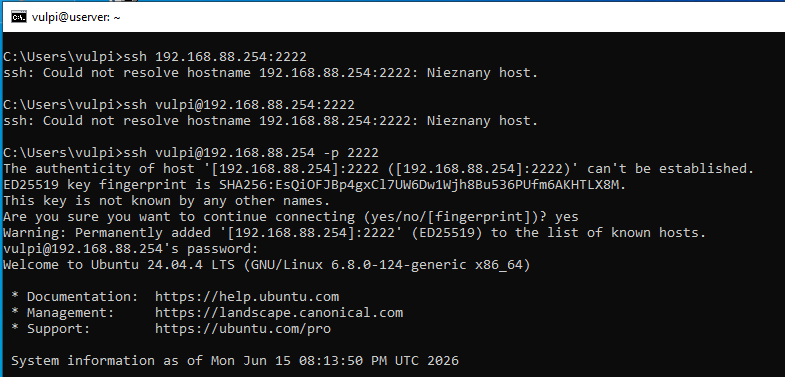
8 Różne z Linuxa
8.1 Ustawienia karty sieciowej (GUI/STACJA)
Jeśli chodzi o stacje lub metode z GUI to IP i maskę, jak i zarówno inne opcje ustawimy w Ustawienia -> Sieć i klikając na zębatke obok karty która nas interesuje otworzy to okno w której mamy zakładke IPv4. Graficznie nie ma problemu z ustawieniem karty sieciowej.
8.2 Ustawienie karty sieciowej (CLI/SERWER)
Tutaj chodzi o ustawienie netplanu, czyli usługi która konfiguruje sieć. POLECAM sprawdzić scieżke /usr/share/doc/netplan/examples/, tam są przykłady konfiguracji netplan, np. statyczny: static.yaml, wifi: wireless.yaml!
Plik konfiguracyjny znajduje się w /etc/netplan/ i zazwyczaj nazywa się 50-cloud-init.yaml Ale zależnie czy jest to stacja czy serwer pliki mogą się różnić, lub może być ich więcej, dlatego na stacji warto po prostu użyć metody GUI którą zobaczysz w Sekcja 8.1 Warto przypomnieć sobie sudo netplan apply która aplikuje zmiany dokonane w pliku. To sie też przydaje przy stacji gdy chcemy pobrać nowy adres z serwera DHCP.
Do konfiguracji netplanu przyda się także ip a tam sprawdzimy nazwę interfejsu jak i również aktualną ip, maske i inne ustawienia.
Podam tutaj przykładową konfiguracje 2 kart, jedną wifi a drugą kablową
# Zawsze pamiętaj tutaj przerwy są spacjami
network: # Powinno być w domyślnej konfiguracji
version: 2 # Powinno być w domyślnej konfiguracji
ethernets:
enp0s3: # nasza karta kablowa
optional: true # WAŻNE (przy restarcie nie ma oczekiwania)
dhcp4: true # Jeśli chcemy IP z dhcp (wtedy nie trzeba podawać innych opcji)
addresses:
- 192.168.88.12/24 # Statyczny IP i maska (/24) którą przypisujemy do karty
nameservers: # Serwery DNS
addressses: [8.8.8.8, 192.168.88.2]
routes:
- to: default # Wymagane przez netplana
via: 192.168.88.1 # Brama domyślna
wifis:
wlp2s0b1: # nasza karta wifi
optional: true # WAŻNE (przy restarcie nie ma oczekiwania)
dhcp4: no
dhcp6: no
addresses: [192.168.88.24/24]
nameservers:
addresses: [192.168.88.2, 8.8.8.8]
access-points:
"nazwa_ssid_sieci_wifi":
password: "haslo_sieci_wifi"
routes:
- to: default # Wymagane przez netplan
via: 192.168.88.1 # Brama domyślna
Przykłady konfiguracji można sprawdzić Tutaj
8.3 Zapora sieciowa (UFW)
Może być zadanie z UFW, gdzie trzeba blokować, pozwalać, włączać i wyłączać zapore.
Zadanie może brzmieć: „Zablokuj cały ruch, zezwól tylko na SSH i WWW”.
- sudo ufw default deny incoming (blokada wszystkiego z zewnątrz).
- sudo ufw allow 22/tcp (albo zmieniony port SSH, np. 2222/tcp).
- sudo ufw allow 80/tcp (Apache).
- sudo ufw enable (włączenie zapory).
8.4 Lokalne grupy i użytkownicy (Tworzenie/Zmiana)
8.4.1 Tworzenie użytkownika
Użytkownika tworzy się za pomocą komendy adduser nazwa-użytkownika. Jest to przyjaźniejsza wersja od useradd wiec najlepiej z niej korzystać. Spyta się ona po wykonaniu komendy o hasło i inne dane.
Aby usunąć użytkownika piszemy deluser nazwa-uzytkownika
8.4.2 Tworzenie grupy
Grupe stworzymy za pomocą sudo addgroup nazwa-grupy.
Aby usunąć grupe piszemy delgroup nazwa-grupy
8.4.3 Dodawanie użytkownika do grupy:
Zrobimy to za pomocą adduser uzytkownik grupa
Można też zrobić to za pomocą: sudo usermod -aG grupa uzytkownik
8.4.4 Sprawdzanie grup i użytkowników
Sprawdzimy jacy są użytkownicy za pomocą cat /etc/passwd
Sprawdzimy jakie są grupy za pomocą cat /etc/group
8.4.5 Zmiana hasła użytkownika
Hasło zmienimi za pomocą sudo passwd nazwa po czym wpisujemy nowe hasło
8.5 System plików - uprawnienia, atrybuty i własciciel
8.5.1 Podgląd szczegółowych uprawnień i innych cech
Można wykonać za pomocą ls -l , ważna jest tu flaga -l.
8.5.2 Ustawienie nowych uprawnień
Uprawnienia zmieniamy z chmod, w zadaniu mogą zostać podane po kolei lub podane w sposób cyfrowy lub literowy np. 770, albo rwxrwx—, warto zapamiętać że r to read - 1, w to write - 2 x to execute - 4. kod cyfrowy dostaniemy po dodaniu liczb ktore przypisane są uprawnieniom. Ze względu na to jak wygląda format nie powtórzą sie inne kombinacje. Wiec np. 5 zawsze będzie się odnosiło do opcji R i X. Trzeba zapamiętać że są 3 kombinacje rwx, w formacie UGO - User, Group, Others. Czyli np. 751 ustawi uprawnienia pliku/folderu 7 dla własciciela, 5 dla grupy (do której nalezy folder), 1 dla innych (nie w grupie).
Przykład: chmod 000 folder - usunie wszystkie uprawnienia dla wlasciciela, grupy i innych.
8.5.3 Specjalne atrybuty plików/folderów
Ustawia się za pomocą chattr np. chattr +i plik aby zamrozić plik przed usunięciem. Sprawdź man chattr po więcej opcji.
8.5.4 Zmiana grupy i własciciela
Zrobimy to wykonując chown uzytkownik:grupa nazwa-pliku, zmieni to wlasciciela na podanego użytkownika i grupe na podaną grupe.
8.6 Zmiana powłoki użytkownika
Zrobimy to za pomocą chsh -s /sciezka/do/powloki np. /bin/zsh. Uwaga zmieni to powłoke użytkownika na którym jesteście zalogowani.
Aby zmienić powłoke dla jakiegoś użytkownika trzeba wykonać: sudo chsh -s /sciezka/do/powloki uzytkownik
Można też sprawdzić dostępne powłoki za pomocą cat /etc/shells
9 Usługi serwera Windows
9.1 Podstawy
9.1.1 Nazwa Serwera
Serwer ma swoją nazwe, który często się wykorzystuje przy scieżkach w sieci np. przy konfiguracji AD i udostępnianiu drukarek, folderów i dysków.
Nazwe serwera to tak naprawde nazwa komputera na którym jest uruchomiony serwer. Znajdziesz ją m.in w Menadżer Serwera -> Serwer lokalny. Tam równiesz znajdziesz domene w której się znajduje serwer.
9.2 Active Directory
Będę używał skrótu AD co oznacza Active Directory
Często musimy zainstalować role AD, ustawić nazwe lasu, pozmieniać jakieś ustawienia grupy i użytkowników domeny lub dodać nowe grupy i użytkowników do domeny.
9.2.1 Instalacja
Instalacja jest łatwa. W Menadżer Serwera klikamy Dodaj role i funkcje dajemy dalej aż dojdziemy do sekcji Role serwera gdzie wybieramy Usługi domenowe Active Directory, klikamy dodaj funkcje i przechodzimy dalej.
Na ostatniej karcie klikamy Zainstaluj i czekamy.
Po zainstalowaniu serwer pokaże nam powiadomienie (taka ikona flagi z trójkącikiem). Gdzie jak klikniemy, piszę że musimy skonfigurować AD. Klikamy niebieski przycisk Podnieś poziom tego serwera... i przechodzimy do konfiguracji lasu.
W oknie kreatora konfiguracji będziemy musieli dodać nowy las za pomocą opcji Dodaj nowy las. Podajemy również nazwe domeny głownej podanej w zadaniu. Nazwą może być np. egzamin.local itp.
W dalszych kartach trzeba ustawić hasło przywracania podane w zadaniu.
Nazwa NetBIOS zostanie sama przypisana automatycznie, zostaw ją chyba że w zadaniu pisze inaczej.
Głownie klikamy Dalej, chyba że system coś od nas chce np. Zainstaluj
Na koncu serwer uruchomi się ponownie i AD został skonfigurowany.
9.2.2 Tworzenie jednostki organizacyjnej, użytkowników i grup domeny
Aby dodać jednostkę organizacyjną, użytkownika albo grupe wejdź w Narzędzia i kliknij na Użytkownicy i komputery usługi Active Directory
Tutaj klikając prawym na las jesteśmy w stanie stworzyć komputery, grupy, użytkowników i jednoski. Zazwyczaj w zadaniu egzaminacyjnym musimy stworzyć jednostke organizacyjną i jakiś użytkowników których pózniej dodajemy do nowych lub istniejących grup.
Nie będę pokazywał jak sie tworzy wszystko, ale jest to logiczne, klikasz prawym i szukasz odpowiedniej opcji. Czasem trzeba kliknąć dwukrotnie lewym.
9.2.3 Dodawanie stacji do domeny
Bardzo często trzeba dodać stacje do domeny AD. Wchodzimy w Wyświetl zaawansowane ustawienia systemu na stacji.
Tam przechodzimy w zakładke Nazwa komputera i klikamy przycisk Zmień, gdzie możemy ustawić nazwe komputera i członkostwo do domeny. Wpisujemy tam naszą domene (np. egzamin w przypadku lasu egzamin.local), pamietaj że stacja musi być podłączona z serwerem żeby to zadziałało.
W karcie sieciowej na komputerze których chcesz dołączyć do domeny musisz ustawić IP DNS serwera na której jest Active Directory. No i oczywiscie musisz mieć połączenie z serwerem żeby to zrobić. Sprawdzaj sobie ipconfig /all i ping czy masz łączność.
9.2.4 Mapowanie dysku za pomocą zasad grupy
Zakładam że masz albo potrafisz stworzyć jednostkę i użytkownika/grupe
Wchodzisz teraz w Narzędzia i klikasz na Zarządzanie zasadami grupy
Tam klikamy w las i naszą domene, w domenie znajdziemy naszą jednostkę organizacyjną, klikamy w nią prawym i tworzymy nowy obiekt zasad grupy, w zadaniu często pisze jak nazwać ten obiekt! My nazwiemy ją mapowanie dysku.
Po stworzeniu zasady pojawi się ona w jednostce klikamy na nią prawym i klikamy Edytuj. To otworzy edytor w którym możemy konfigurować opcje
Po wejsciu podajemy lokalizacje i oznaczenie dysku literą.
W zadaniu może też być podane że mapowanie ma być wykonywane tylko dla podanej grupy/jednoski lub użytkownika. Są różne opcje. Wchodzisz wtedy w zakładke Wspólne i zaznaczasz Określ wartość docelową na poziomie elementu i klikasz w przycisk obok. Tak dodajesz nowy element np. Grupe Zabezpieczeń w przypadku konfiguracji mapowania dla grupy. Wybierasz grupe i opcje i masz.
Za pomocą takiej konfiguracji logując się na jakiegoś użytkownika z grupy egzaminatorzy widzimy odrazu podpięty dysk sieciowy z literą Z
Czasem trzeba zweryfikować uprawnienia tak aby ta grupa mogła np. wykonywayć albo odczytywać. Sprawdź do tego Sekcja 7.7.4
9.3 Usługa drukowania
9.3.1 Instalacja
Żeby skonfigurować drukarki i wdrażać ją w AD trzeba dodać role Usługi drukowania i zarządzania dokumentami, przechodzimy dalej i instalujemy. Wystarczy zaznaczona usługa Serwer wydruku. Po instalacji możemy wejść w Narzędzia -> Zarządzanie drukowaniem. Robisz identyczne kroki jak przy instalacji AD tutaj: Obrazku 7 tylko zaznaczasz Usługi drukowania ...
9.3.2 Udostępnianie/Rozmieszczanie/Wdrażanie drukarki
Wchodzimy w Narzędzia -> Zarządzanie drukowaniem, tutaj skonfigurujemy i również rozmieścimy drukarki w domenie Active Directory.
W praktyce ta drukarka jest drukarką wirtualną, i nie da się jej udostępnić. Z prawdziwą drukarką na egzaminie możecie spokojnie robić te same kroki.
Właściwie to w następnych krokach tworze sztuczną drukarkę aby zasymulować udostępnianie.
Klikając w Rozmieść za pomocą zasad grupy... możemy wybrać obiekt GPO który będzie tym wdrożeniem/rozmieszczeniem zarządzał, jeśli nie mamy tego obiektu to możemy również skorzystać z przycisku który ten obiekt stworzy.
Po wybraniu obiektu GPO wybieramy albo Użytkownicy albo Komputery zależnie od zadania, rozmieszczenie albo bedzie dotyczyły poszczególnych komputerów albo użytkowników.
Po tym musimy wejść i zedytować obiekt GPI, zrobimy to w zarządzaniu zasadami grupy po kliknięciu prawym na obiekt i wybraniu Edytuj. Załóżmy że chcemy udostępnić drukarkę dla grupy Drukarze.
Przed w rozmieszczeniem drukarki należy ją udostępnić, można to zrobić w Panel sterowania -> Urządzenia i drukarki, w tym oknie klikasz prawym na drukarke i zaznaczasz Właściwości Drukarki wchodzisz na zakładke Udostępnianie, Zobaczysz jak to zrobić na Obrazku 2. Zapamiętaj nazwę udziału, bo będziemy ją wykorzystywać w następnym kroku.
Wchodzimy w Konfiguracje użytkownika -> Preferencje -> Ustawienia Panelu Sterowania -> Drukarki. W nowym oknie klikamy prawym przyciskiem i zaznaczamy Nowy -> Drukarka udostępniona i zaznacz Udostępnij tę drukarkę.
W nowym oknie zmieniasz Akcje na Utwórz i ustawiasz scieźke udziału w formacie: \\ + Nazwa Serwera + \ Nazwa Udziału.
Nazwe serwera to nazwa komputera na którym jest ten serwer. W moim przypadku jest to Windows-Server. Jeśli chodzi o drukarke to stworzyłem nową Drukarka_Egzamin. A więc w moim przypadku scieżka udziału wyglądała by tak:
\\Windows-Server\Drukarka_Egzamin. Nazwe komputera znajdziesz na Obrazku 6
Żeby rozmieścić ją dla specyficznych użytkowników lub grupy, wchodzimy w zakładke Wspólne, i tak to konfigurujemy. Wygląda to tak samo jak przy mapowaniu dysków co zobaczysz na Obrazku 8
9.3.3 Harmonogram i piorytet drukarki
Ustawia się tak samo jak na zwykłym Windowsie, wejdz w Panel sterowania -> Urządzenia i drukarki, kliknij prawym na drukarke i Właściwości drukarki. Po czym w zakładce Zaawansowane ustawisz harmonogram i piorytet.
Zobacz zdjęcie z zwykłego windowsa na Obrazku 3
10 Usługi serwera Linux
W tej sekcji omówimy najważniejsze usługi w serwerze Ubuntu linux. Porozmawiamy również o tym jak skonfigurować opcje tych usług itp.
10.1 Samba
Szybka przypominajka: usługa nazywa się smbd, w konsoli używa się samba, trzeba włączyć nmbd żeby działały nazwy sieciowe. Usługe możemy aktywować za pomocą systemctl enable nazwa-usługi i włączyć za pomocą systemctl start nazwa-usługi. Plik konfiguracyjny jest w /etc/samba/smb.conf
Na egzaminie Samba będzie już zainstalowany, jedyne co to będzie trzeba go włączyć za pomocą systemctl enable smbd, musimy też włączyć nmbd czyli usługa NetBIOS Name, jeśli chcemy żeby w windowsie serwer był widoczny pod nazwą komputera \\Serwer-Linux.
Najważniejszą częścią samby jest plik konfiguracyjny /etc/samba/smb.confg, w nim definujemy uprawnienia, udostępniane pliki i ustawienia zabezpieczeń. Możemy edytowac plik za pomocą np. nano
10.1.1 Dodawanie użytkowników
Zanim dodamy użytkownika do Samby musimy go dodać użytkownika do systemu linux co robiliśmy w Sekcja 8.4.1 a weryfikowaliśmy w Sekcja 8.4.4 Po weryfikacji do samby dodamy użytkownika za pomocą komendy: sudo smbpasswd -a uzytkownik
10.1.2 Udostępnianie konkretnego folderu
Aby udostępnić folder w samba najpierw musimy ten folder stworzyć. Oczywiście to robimy za pomocą mkdir /pliki. Możemy też przypisać uprawnienia co robiliśmy w Sekcja 8.5.2 Pózniej edytujemy /etc/samba/smb.conf gdzie dodajemy nową sekcje [pliki]
Ważnym krokiem w konfiguracji jest ustawienie read only = no albo writeable = yes, zależnie od zadania, jeśli nie podamy read only = no to domyślnie folder bedzie tylko do odczytu.
Sekcja może wyglądać tak:
[pliki]
comment = Testowy folder zeby sprawdzic sambe # komentarz.
path = /pliki # sciezka do folderu
# Czy folder można odkryć czy jest ukryty/widoczny
browseable = yes
# tylko do odczytu, ważne bo w innym wypadku jest readonly by default
read only = no
# domyślne uprawnienia dla nowych plików stworzonych przez użytkownika
create mask = 0770
# domyślne uprawnienia dla nowych folderów stworzonych przez użytkownika
directory mask = 0770
# Wymusza że w uprawnieniach nowych plików czy folderów grupą bedzie 'pracownicy'
force group = pracownicy
# pozwala na wejscie bez logowania
guest ok = yes
# Kto może wejść a kto ma zakaz
invalid users = haker
valid users = dyrektor, @pracownicy, @kadry, @praktykanci
# Podział na prawa do zapisu i odczytu
read list = @praktykanci
write list = dyrektor, @kadryPolecam na końcu zrobić test poprawnosci tak jak w Sekcja 10.1.5
Zrestartuj również sambe i nmbd z sudo systemctl restart smbd nmbd
10.1.3 Udostępnianie katalogów domowych
Robimy to za pomocą sekcji [homes] w /etc/samba/smb.conf. Tam ustawiamy znane nam już ustawienia z Sekcja 10.1.2. I ważne! dodajemy: valid users ustawiony na %S
[homes]
comment = "Katalogi domowe użytkowników"
browseable = no # Blokujemy odkrywanie
read only = no
create mask = 0700
directory mask = 0700
# te %S oznacza bieżacego użytkownika, przez co np. tylko janek dostanie się do folderu domowego janka.
valid users = %SPolecam na końcu zrobić test poprawnosci tak jak w Sekcja 10.1.5
Zrestartuj również sambe i nmbd z sudo systemctl restart smbd nmbd
10.1.4 Udostępnianie drukarek
Raczej nie bedzie udostępniania prawdziwej drukarki, ale może być zadanie żeby skonfigurować coś w sambie.
W Sambie jest już sekcja pod drukarki, jedyne co musimy zrobić to troche pozmieniac opcje np. kto może używać drukarki. Ale żeby drukarka była udostępniona trzeba ją dodać w systemie CUPS linuxa. używamy komendy lpadmin (line printer …)
Jeśli byłby CUPS to można wykorzystać taką komende:
sudo lpadmin -p “HP_Biuro” -v “socket://192.168.1.50:9100” -m raw -E
Możemy zmienić np. guest ok = yes albo valid users = @drukarze
[printers]
comment = Wszystkie drukarki sieciowe
path = /var/spool/samba
# Ukrywa samą sekcję "printers", ale pokazuje konkretne drukarki
browseable = no
# Czy goście mogą drukować bez logowania
guest ok = yes
# Zawszed no tutaj
writable = no
# KLUCZOWE: mówi sambie że to jest drukarka
printable = yes10.1.5 Test poprawności
Sprawdź czy nie popełniłeś jakieś literówki za pomocą testparm. Program przeanalizuje plik smb.conf i powie ci czy jest OK czy nie.
10.2 FTP
W FTP korzystamy z usługi vsftpd, tak samo ją włączamy i resetujemy systemctl enable/restart vsftpd jak w przypadku innych usług. vsftpd ma plik konfiguracyjny w scieżce /etc/vsftpd.conf, to jest scieżka odrazu w /etc/ a nie w osobnym folderze. Zapamietaj sobie głównie allow_writeable_chroot=YES, bo tego nie ma w podstawowym vsftpd.conf.
# Udostępnia cały system plików od roota /
local_root=/
# Zezwalaj na logowanie lokalnym użytkownikom Linuxa (np. janek)
local_enable=YES
# Zezwalaj na zapis/wygrywanie plików na serwer
# (domyślnie FTP jest tylko do odczytu!)
write_enable=YES
# Blokada użytkowników w ich katalogach domowych
# Dzięki temu 'janek' nie wyjdzie wyżej i nie zobaczy plików roota
chroot_local_user=YES
# Pozwala na zapis w zamkniętym katalogu zdefiniowanym w opcji /\
allow_writeable_chroot=YES
# Po odjęciu po kolei cyframi z 777 decyduje z jakimi
# uprawnieniami w linux sie pojawią pliki wrzucane przez np. Janka.
local_umask=02210.3 Apache2 - WWW
Apache2 to usługa pozwalająca na konfiguracje stron internetowych WWW. Na początku musimy stworzyć folder w której się znajdzie strona np. sudo mkdir -p /var/www/strona/. Tam tworzymy albo umieszczamy strone index.html. Musimy ustawić te foldery aby włascicielem i grupą był www-data Teraz trzeba skonfigurować Apache2 w /etc/apache2/apache2.conf.
10.3.1 Strona w /var/www/
Jeśli storna jest w /var/www/ to apache2 automatycznie wie że może odczytywać tam istniejące pliki i dzięki temu nie trzeba ustawiać innych opcji oprócz DocumentRoot po którym podajemy dokładną lokalizacje np. /var/www/strona
Jak widac na zdjęciu w pliku da się również zmienić port, domyślnie jest to port 80. Oprócz portu ustawiamy tam też DocumentRoot który wskazuje root gdzie są pliki strony. W przypadku gdzie tam będzie index.html apache wyświeli tą strone domyślnie, chyba ze podamy inną scieżke.
Możemy też ustawić nazwe serwera za pomocą ServerName www.egzamin.com, to się czasem wykorzystuje w sytuacjach gdzie również konfiguruje się serwer DNS .
10.3.2 Strona w niestandardowej lokalizacji
W wiekszości sytuacji folder i pliki strony będzie trzeba umieścić w jakimś folderze /var/www, ale może przydarzyć się sytuacja gdzie będzie trzeba stworzyc nowy folder i tam umieścić pliki np. /strona w root. Aby to zrobić trzeba również dodać dyrektywe <Directory /strona>Require all granted</Directory> co pozwala Apache na wyświetlanie stron w tamtej lokalizacji. W innym wypadku strona wyświetli Forbidden
10.3.3 Zmiany portu w Apache2
Aby zmienić port strony, musimy zmienić wartości po : w VirtualHost konfiguracji który zobaczysz na początku Obrazku 9 Oprócz tego trzeba również wejść w /etc/apache2/ports.conf i zmienić tam Listen z 80 na podany port.
Warto wiedzieć że możemy dodać nowe Listen i naprzykład mieć:
Listen 80
Listen 808010.4 DNS - bind9
Przez DNS jesteśmy wstanie stworzyć jakąś domene. Często robi się to jeśli jest jeszcze strona WWW ale nie musi być strony aby skonfigurować DNS. Sama usługa nazywa się bind9 więc właczamy i restartujemy ją za pomocą systemctl enable/restart bind9. Pliki konfiguracyjne znajdziemy w /etc/bind/
10.4.1 Deklaracja strefy (tworzenie domeny)
Aby stworzyć domene musimy zedytować /etc/bind/named.conf.local i dodać tam strefe której konfiguracja wygląda tak:
zone "egzamin.local" {
type master;
file "/etc/bind/db.egzamin.local";
};Po zone to nazwa naszej domeny, czyli egzamin.local, nie ma tutaj pod domen np. www. Pamiętaj aby stosować ; średnik po klamrach i linijkach w klamrze.
W górnym skrypcie napisaliśmy file "/etc/bind/db.egzamin.local"; jest to plik bazy danych naszej domeny. Do tego najlepiej jednak skopiować szablon który jest w tym samym folderze /etc/bind/db.local. Kopiujemy go za pomocą sudo cp /etc/bind/db.local /etc/bind/db.egzamin.local
Także teraz przechodzimy do konfiguracji bazy db.egzamin.local
10.4.2 Tworzenie bazy danych domeny
Aby domena działała po konfiguracji deklaracji strefy którą zrobiliśmy w Sekcja 10.4.1 trzeba ustawić baze danych zgodnie z tym co wpisaliśmy w deklaracji w file w moim przypadku wpisałem tam /etc/bind/db.egzamin.local, czyli w tym miejscu tworze tą baze, ale kopiuje szablon który jest w /etc/bind/db.local
Skopiujemy go za pomocą sudo cp /etc/bind/db.local /etc/bind/db.egzamin.local
Po wykonaniu kopiu wchodzimy w edycje naszej bazy. Jest tutaj kilka rzeczy które powinniśmy zmienić, w moim przypadku domena nazywa się egzamin.local dlatego taką też wpisuje, awięc:
Po pierwsze zmieniamy w linijce SOA localhost. na egzamin.local. Pamietaj o tej kropce na końcu, ona jest wymagana!
Po drugie, we wszystkich linijkach gdzie jest localhost. zmieniamy wartość na egzamin.local. (również tam gdzie jest root.localhost.)
Po trzecie, tam gdzie mamy IP 127.0.0.1 i A zmieniamy adres na adres naszego serwera, który pewnie ustawiliśmy w konfiguracji netplana.
Po takiej konfiguracji mamy podstawową domene gotową, jednak zazwyczaj w DNS trzeba stworzyć poddomeny np. www, w takim przypadku tak naprawde wystarczy skopiować to co było w linijce z literą A zmieniająć tylko @ na www
Jak widać na zdjęciu:
- Zmieniony localhost na egzamin.local
- Zmieniony localhost przy linijce z NS (ważne)
- Zmieniony adres loopback 127.0.0.1 w linijce z A na ip serwera
- Dodane linijek z www i ftp zamiast @ z tym samym IP serwera
10.4.3 Zmiana czasu TTL/Negative TTL strefy
TTL oznacza Time To Live, czyli czas życia adresu w pamięci podręcznej klienta. Zasada typu “Możesz trzymać ten adres u siebie w cache przez X sekund, po czym skasuj go i zapytaj mnie ponownie”. Ustawia się go przy $TTL w bazie.
Czas TTL ustawia się w bazie bind9 którą tworzyliśmy w Sekcja 10.4.2 i widać to też na Obrazku 10 są tam zaznaczone Negative Cache TTL i $TTL po których jest wpisana liczba.
Ta liczba to ilość sekund, wyjaśniliśmy sobie już TTL ale nie Negative Cache TTL, działa to odwrotnie do TTL, czyli jest to czas po którym komputer/klient zapomina o tym że jakaś domena NIE istnieje. Czyli komputer zapytał DNS o domene, DNS odpowiedział, że domena nie istnieje a teraz komputeraz zapamietał w pamięci to na zapisany czas w Negative Cache TTL
Czas TTL można ustawić za pomocą sekund (domyślna wartość), lub za pomocą: m (minuty), h(godziny), d (dni), w (tygodnie).
Np. $TTL 2h - ustawienie czasu TTL na 2 godziny.
10.4.4 Parametry bazy domen bind9
Oprócz podstaw np. TTL które w kontekscie DNS pojawiają się często, są jeszcze inne parametry które zobaczymy udokumentowane przy linijce SOA na Obrazku 10 Są to:
- Serial - To jest licznik wersji bazy domen, zwiększając ten licznik inne usługi i serwer zapasowy zrozumieją że zostały wprowadzone zmiany i dokonają aktualizacji, w innym wypadku jeśli nie zmieniono licznika serwer może być ignorowany.
- Refresh - Jeśli bylibyśmy w posiadaniu drugiego zapasowego serwera DNS to wartość refresh mówi temu serwerowi jak często ma sprawdzać zmiany w naszym DNS.
- Retry - Jeśli główny serwer padnie, to wartość mówi serwerowi zapasowemu jak szybko ma ponawiać próby kontaktu z nim.
- Expire - Jeśli głowny serwer padnie i nie podniesie się przez dłuższy czas to po zdefiniowanym tu czasie serwer zapasowy ma całkowicie przestać obsługiwać tę domene.
TTL i Negative Cache TTL omówiliśmy już w Sekcja 10.4.3
Dobrą praktyką jest zwiekszenie licznika Serial o 1 po każdej modyfikacji.
Większości z tych funkcji nie użyjemy i nie zobaczymy efektów zmiany, ale egzamin ma sprawdzić czy umiemy to zrobić.
10.5 SSH
SSH jest bardzo częstym zadaniem na egzaminie w przypadku serwera linux, pozwala nam ono bezpieczną zdalną komunikacje ze serwerem. Usługa nazywa się ssh i musimy ją oczywiście włączyć i uruchomić za pomocą systemctl enable ssh i systemctl start ssh, plik konfiguracyjny znajdziemy w /etc/ssh/sshd_config. Czasami usługa sie nazywa sshd jesli nie działa ssh to spróbuj sshd
Hitami zadań są, zmiana portów, blokowanie logowania na konto root, ograniczenia logowania (biała lista).
10.5.1 Zmiana portu
Na samym początku pliku /etc/ssh/sshd_config znajdziesz zakomentowany Port 22, usuj # i zmień liczbe na podany w zadaniu port.
Ja zmieniłem port z 22 na 2222.
10.5.2 Blokowanie logowania na konto root
W pliku /etc/ssh/sshd_config znajdziesz zakomentowany #PermitRootLogin z wartością prohibid-password albo no/yes. usuwasz hasztag i dajesz zdecydowane no
PermitRootLogin no
10.5.3 Ograniczenia logowania - Biała/Czarna lista
Można ustawić że tylko niektórzy z użytkowników mogą się logować za pomocą ssh, robimy to także w /etc/ssh/sshd_config i wpisujemy tam AllowUsers. Po czym wpisujemy tam nazwy użytkowników rodzielone spacjami.
np. AllowUsers janek admin
Nikt inny nie będzie w stanie sie zalogować oprócz janka i admina.
10.5.4 Restart serwera (Ważne)
Po zmianie portu lub niektórych ustawień wymagane jest to abyś zrestartował usługe, jednak jest to bardziej skompilowane niż restart zamego ssh, musimy wykonać systemctl daemon-reload i zrestartować ssh i ssh.socket.
Jest to też napisane na prawie samym początku w konfiguracji sshd_config
10.5.5 Łączenie się z serwerem SSH
Na innym linuxie możemy się połączyć z takowym serwerem SSH za pomocą komendy ssh nazwa@ip -p port, robiliśmy to na Obrazku 5. W windowsie możesz się połaczyć za pomocą PuTTY, co robiliśmy w Sekcja 7.9
Uwaga żeby nie pomylić się przy połączeniu z komendą ssh port dajemy po fladze -p a nie tak jak w ekploratorze albo przeglądarce po dwukropku za IP.
10.6 DHCP
Nazwa usługi to isc-dhcp-server, a plik konfiguracyjny jest w /etc/default/isc-dhcp-server. Musisz wybrać według zadania poprawną karte za pomocą ip a. Wchodzimy na /etc/default/isc-dhcp-server i wpisujemy nazwe naszej karty w INTERFACESv4="enp0s8", zamiast enp0s8, wpisz tam nazwe swojej karty. Pózniej przechodzimy do pliku /etc/dhcp/dhcpd.conf gdzie ustawiamy opcje serwera DHCP.
W opcjach /etc/dhcp/dhcpd.conf, można ustawić m.in: sieć z maską, zakres rozdawanych adresów, brame domyślną (router), IP serwera DNS dla klientów, nazwe domeny dla klientów, czas dzierżawy, maksymalny czas dzierżawy w sekundach.
11 Duża sciągawa
Szybko i na temat, komendy, usługi, pliki konfiguracyjne
11.0.0.1 Komendy linux
- man komenda
- ip a
- chage
- chown
- chsh
- chmod
- chattr
- adduser
- addgroup
- deluser
- delgroup
- passwd nazwa
- ls -l
- cat /etc/shells
- cat /etc/passwd
- ufw (default deny / allow / disallow) (incoming / 22/tcp / 80/tcp …)
- ssh
nazwa@ip-p PORT - hostnamectl
- uname
- cat /etc/os-release
- dmidecode (–type memory)
- free -h
- lscpu
- lspci
- xrandr
- lshw -class “memory/processor/disk”
- df -h
- tar
- ping
11.0.0.2 Komendy windows
- ipconfig /all
- ipconfig /release
- ipconfig /renew
- ipconfig /flushdns
- nslookup nazwa.domeny
- nslookup nazwa.domeny IP_SERWERA
- netsh int ip reset (całkowity reset tcp/ip)
- ping
- tracert
/usr/share/doc - folder z dokumentacją programów np. netplan
/etc/ - zazwyczaj tutaj są pliki konfiguracyjne /var/www - strony apache2
11.0.0.3 Netplan
Plik: /etc/netplan/*.yaml
- dhcp4: false
- addresses: [192.168.88.123]
- routes: \n - to: default \n via: 192.168.88.1 (brama)
- nameservers: \n - addresses: [8.8.8.8]
- sudo netplan apply
11.0.0.4 APACHE2
Pliki: /etc/apache2/ a tam ports.conf i sites-available/000-default.conf
Nazwa: apache2
- Listen port
- <VirtualHost *:80> lub <VirtualHost ip:port>
- DocumentRoot /var/www/html (sciezka)
- <Directory /sciezka> i Require all granted
11.0.0.5 BIND9
Pliki: /etc/bind/named.conf.local i /etc/bind/db.domena
nazwa: bind9
- zone “domena.local” { type master; file “/etc/bind/db.domena”; };
- $TTL 1d/3600/2h/30m
- Zamiana localhost na domena.local w db
- Zamiana 127.0.0.1 na ip serwera gdzie jest dns
- poddomeny www, ftp zamiast @
- IN NS, IN A
- ftp IN CNAME domena.local.
- kropki na koncu nazw domen
- named-checkzone domena.local /etc/bind/db.domena - testy pliku
- nslookup domena.local - test dzialania
11.0.0.6 SSH
Plik: /etc/ssh/sshd_config
Nazwa: ssh/sshd
- Port 22
- PermitRootLogin no
- AllowUsers janek adam
- sudo systemctl daemon-reload
- sudo systemctl restart ssh shh.socket
- ssh user@IP -p PORT - laczenie
- scp -P PORT plik.txt user@IP:/sciezka/ - kopiowanie
11.0.0.7 ISC-DHCP-SERVER
NAZWA: isc-dhcp-server
Plik: /etc/default/isc-dhcp-server (DEFAULT!!!!) wybor kart
Plik: /etc/dhcp/dhcpd.conf konfiguracja
- INTERFACESv4=“enp0s8”
- Fajne przyklady w dhcpd, zamienic domene z ip
- dhcpd -t -cf /etc/dhcp/dhcpd.conf - testowanie konfigu
11.0.0.8 SAMBA
Nazwa: smbd i nmbd
Plik: /etc/samba/smb.conf
- sudo smbpassw -a nazwa !!!
- workgroup - nazwa grupy roboczej
- testparm
- writeable/read only = no !!!
- [homes]
- valid users = %s
- directory/create mask
- browseable
- guest ok
- path
- force group
- printable (drukarka eh)
11.0.0.9 VSFTPD
Nazwa: vsftpd
Plik: /etc/vsftpd.conf
- anonymous_enable=YES
- local_enable=YES
- local_root=/
- chroot_local_user=YES
- allow_writeable_chroot=YES !!!
- write_enable=YES (WAŻNE)
- pamietac o uprawnieniach w linuxie
11.0.0.10 WINDOWS SERWER
- dodajesz funkcje i wybierasz usluge
- zarzadzanie i klikasz logicznie